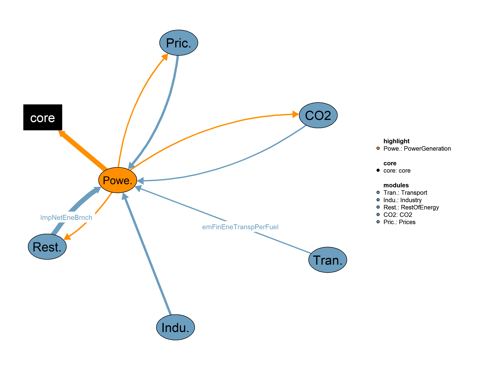

This is the PowerGeneration module.

| Description | Unit | A | |
|---|---|---|---|
| VMVConsFiEneSec (allCy, EFS, YTIME) |
Final consumption in energy sector | \(Mtoe\) | x |
| VMVConsFinEneCountry (allCy, EF, YTIME) |
Total final energy consumnption | \(Mtoe\) | x |
| VMVConsFinNonEne (allCy, EFS, YTIME) |
Final non energy consumption | \(Mtoe\) | x |
| VMVConsFuel (allCy, DSBS, EF, YTIME) |
Consumption of fuels in each demand subsector, excluding heat from heatpumps | \(Mtoe\) | x |
| VMVCostElcAvgProdCHP (allCy, CHP, YTIME) |
Average Electricity production cost per CHP plant | \(US\$2015/KWh\) | x |
| VMVCstCO2SeqCsts (allCy, YTIME) |
Cost curve for CO2 sequestration costs | \(US\$2015/tn of CO2 sequestrated\) | x |
| VMVDemFinEneTranspPerFuel (allCy, TRANSE, EF, YTIME) |
Final energy demand in transport subsectors per fuel | \(Mtoe\) | x |
| VMVImpNetEneBrnch (allCy, EFS, YTIME) |
Net Imports | \(Mtoe\) | x |
| VMVLossesDistr (allCy, EFS, YTIME) |
Distribution losses | \(Mtoe\) | x |
| VMVPriceElecInd (allCy, YTIME) |
Electricity index - a function of industry price | \(1\) | x |
| VMVPriceFuelSubsecCarVal (allCy, SBS, EF, YTIME) |
Fuel prices per subsector and fuel | \(k\$2015/toe\) | x |
| Description | Unit | |
|---|---|---|
| VMVBaseLoad (allCy, YTIME) |
Corrected base load | \(GW\) |
| VMVCapElec (allCy, PGALL, YTIME) |
Electricity generation plants capacity | \(GW\) |
| VMVCapElecTotEst (allCy, YTIME) |
Estimated Total electricity generation capacity | \(GW\) |
| VMVCostPowGenAvgLng (allCy, ESET, YTIME) |
Long-term average power generation cost | \(US\$2015/kWh\) |
| VMVPeakLoad (allCy, YTIME) |
Electricity peak load | \(GW\) |
| VMVProdElec (allCy, PGALL, YTIME) |
Electricity production | \(TWh\) |
This is the legacy realization of the PowerGeneration module.
Equations*** Power Generation
QCapElec2(allCy,PGALL,YTIME) "Compute electricity generation capacity"
QRenTechMatMultExpr(allCy,PGALL,YTIME) "Renewable power capacity over potential (1)"
QPotRenCurr(allCy,PGRENEF,YTIME) "Compute current renewable potential"
QCapElecCHP(allCy,CHP,YTIME) "Compute CHP electric capacity"
QLambda(allCy,YTIME) "Compute Lambda parameter"
QBsldEst(allCy,YTIME) "Compute estimated base load"
QBaseLoadMax(allCy,YTIME) "Compute baseload corresponding to maximum load"
QCostHourProdInvDec(allCy,PGALL,HOUR,YTIME) "Compute hourly production cost used in investment decisions"
QCostHourProdInvDecNoCCS(allCy,PGALL,HOUR,YTIME) "Compute hourly production cost used in investment decisions"
QSensCCS(allCy,YTIME) "Compute gamma parameter used in CCS/No CCS decision tree"
QCostProdSpecTech(allCy,PGALL,YTIME) "Compute production cost used in investment decisions"
QShareNewTechCCS(allCy,PGALL,YTIME) "Compute SHRCAP"
QShareNewTechNoCCS(allCy,PGALL,YTIME) "Compute SHRCAP excluding CCs"
QCostVarTech(allCy,PGALL,YTIME) "Compute variable cost of technology"
QCostVarTechNotPGSCRN(allCy,PGALL,YTIME) "Compute variable cost of technology excluding PGSCRN"
QCostProdTeCHPreReplac(allCy,PGALL,YTIME) "Compute production cost of technology used in premature replacement"
QCostProdTeCHPreReplacAvail(allCy,PGALL,PGALL2,YTIME) "Compute production cost of technology used in premature replacement including plant availability rate"
QIndxEndogScrap(allCy,PGALL,YTIME) "Compute endogenous scrapping index"
QCapElecNonCHP(allCy,YTIME) "Compute total electricity generation capacity excluding CHP plants"
QGapGenCapPowerDiff(allCy,YTIME) "Compute the gap in power generation capacity"
QPotRenSuppCurve(allCy,PGRENEF,YTIME) "Compute renewable potential supply curve"
QPotRenMaxAllow(allCy,PGRENEF,YTIME) "Compute maximum allowed renewable potential"
QRenTechMatMult(allCy,PGALL,YTIME) "Compute renewable technologies maturity multiplier"
QScalWeibullSum(allCy,PGALL,YTIME) "Compute sum (over hours) of temporary variable facilitating the scaling in Weibull equation"
QNewInvElec(allCy,YTIME) "Compute for Power Plant new investment decision"
QSharePowPlaNewEq(allCy,PGALL,YTIME) "Compute the power plant share in new equipment"
QCostVarTechElec(allCy,PGALL,YTIME) "Compute variable cost of technology"
QCostVarTechElecTot(allCy,YTIME) "Compute Electricity peak loads"
QSortPlantDispatch(allCy,PGALL,YTIME) "Compute Power plants sorting according to variable cost to decide the plant dispatching"
QNewCapElec(allCy,PGALL,YTIME) "Compute the new capacity added every year"
QNetNewCapElec(allCy,PGALL,YTIME) "Compute the yearly difference in installed capacity"
QCFAvgRen(allCy,PGALL,YTIME) "Compute the average capacity factor of RES"
QCapOverall(allCy,PGALL,YTIME) "Compute overall capacity"
QScalFacPlantDispatch(allCy,HOUR,YTIME) "Compute the scaling factor for plant dispatching"
QProdElecEstCHP(allCy,YTIME) "Estimate the electricity of CHP Plants"
QProdElecNonCHP(allCy,YTIME) "Compute non CHP electricity production"
QProdElecReqCHP(allCy,YTIME) "Compute total estimated CHP electricity production"
QCostPowGenLngTechNoCp(allCy,PGALL,ESET,YTIME) "Compute long term power generation cost of technologies excluding climate policies"
QCostAvgPowGenLonNoClimPol(allCy,PGALL,ESET,YTIME) "Compute long term average power generation cost excluding climate policies"
QCostPowGenLonNoClimPol(allCy,ESET,YTIME) "Compute long term power generation cost excluding climate policies"
QConsElec(allCy,DSBS,YTIME) "Compute electricity consumption per final demand sector"
QLoadFacDom(allCy,YTIME) "Compute load factor of entire domestic system"
QDemElecTot(allCy,YTIME) "Compute total electricity demand"
QProdElecCHP(allCy,CHP,YTIME) "Compute electricity production from CHP plants"
QProdElecReqTot(allCy,YTIME) "Compute total required electricity production"Interdependent Equations
Q04ProdElec(allCy,PGALL,YTIME) "Compute electricity production from power generation plants"
Q04CostPowGenAvgLng(allCy,ESET,YTIME) "Compute long term power generation cost"
Q04CapElecTotEst(allCy,YTIME) "Compute Estimated total electricity generation capacity"
Q04PeakLoad(allCy,YTIME) "Compute elerctricity peak load"
Q04CapElec(allCy,PGALL,YTIME) "Compute electricity generation capacity"
Q04BaseLoad(allCy,YTIME) "Compute electricity base load"
;
Variables*** Power Generation Variables
VCapElec2(allCy,PGALL,YTIME) "Electricity generation plants capacity (GW)"
VRenTechMatMultExpr(allCy,PGALL,YTIME) "Renewable power capacity over potential (1)"
VPotRenCurr(allCy,PGRENEF,YTIME) "Current renewable potential (GW)"
VCapElecCHP(allCy,CHP,YTIME) "Capacity of CHP Plants (GW)"
VLambda(allCy,YTIME) "Parameter for load curve construction (1)"
VBsldEst(allCy,YTIME) "Estimated base load (GW)"
VBaseLoadMax(allCy,YTIME) "Baseload corresponding to Maximum Load Factor (1)"
VCostHourProdInvDec(allCy,PGALL,HOUR,YTIME) "Hourly production cost of technology (US$2015/KWh)"
VCostHourProdInvDecNoCCS(allCy,PGALL,HOUR,YTIME) "Hourly production cost of technology (US$2015/KWh)"
VSensCCS(allCy,YTIME) "Variable that controlls the sensitivity of CCS acceptance (1)"
VCostProdSpecTech(allCy,PGALL,YTIME) "Production cost of technology (US$2015/KWh)"
VShareNewTechCCS(allCy,PGALL,YTIME) "Power plant share in new equipment (1)"
VShareNewTechNoCCS(allCy,PGALL,YTIME) "Power plant share in new equipment (1)"
VCostVarTech(allCy,PGALL,YTIME) "Variable cost of technology (US$2015/KWh)"
VCostVarTechNotPGSCRN(allCy,PGALL,YTIME) "Variable cost of technology excluding PGSCRN (US$2015/KWh)"
VCostProdTeCHPreReplac(allCy,PGALL,YTIME) "Production cost of technology used in premature replacement (US$2015/KWh)"
VCostProdTeCHPreReplacAvail(allCy,PGALL,PGALL2,YTIME) "Production cost of technology used in premature replacement including plant availability rate (US$2015/KWh)"
VIndxEndogScrap(allCy,PGALL,YTIME) "Index used for endogenous power plants scrapping (1)"
VCapElecNonCHP(allCy,YTIME) "Total electricity generation capacity excluding CHP (GW)"
VGapGenCapPowerDiff(allCy,YTIME) "Gap in total generation capacity to be filled by new equipment (GW)"
VPotRenSuppCurve(allCy,PGRENEF,YTIME) "Renewable potential supply curve (1)"
VPotRenMaxAllow(allCy,PGRENEF,YTIME) "Maximum allowed renewable potential (GW)"
VRenTechMatMult(allCy,PGALL,YTIME) "Renewable technologies maturity multiplier (1)"
VScalWeibullSum(allCy,PGALL,YTIME) "Sum (over hours) of temporary variable facilitating the scaling in Weibull equation (1)"
VNewInvElec(allCy,YTIME) "Power plant sorting for new investment decision according to total cost (1)"
VSharePowPlaNewEq(allCy,PGALL,YTIME) "Power plant share in new equipment (1)"
VCostVarTechElec(allCy,PGALL,YTIME) "Variable cost of technology (US$2015/KWh)"
VCostVarTechElecTot(allCy,YTIME) "Electricity peak loads (GW)"
VSortPlantDispatch(allCy,PGALL,YTIME) "Power plants sorting according to variable cost to decide the plant dispatching (1)"
VNewCapElec(allCy,PGALL,YTIME) "The new capacity added every year (MW)"
VNetNewCapElec(allCy,PGALL,YTIME) "Yearly difference in installed capacity (MW)"
VCFAvgRen(allCy,PGALL,YTIME) "The average capacity factor of RES (1)"
VCapOverall(allCy,PGALL,YTIME) "Overall Capacity (MW)"
VScalFacPlaDisp(allCy,HOUR,YTIME) "Scaling factor for plant dispatching (1)"
VProdElecEstCHP(allCy,YTIME) "Estimate the electricity of CHP Plants (1)"
VProdElecNonCHP(allCy,YTIME) "Non CHP total electricity production (TWh)"
VProdElecReqCHP(allCy,YTIME) "Total estimated CHP electricity production (TWh)"
VCostPowGenLngTechNoCp(allCy,PGALL,ESET,YTIME) "Long-term average power generation cost (US$2015/kWh)"
VCostAvgPowGenLonNoClimPol(allCy,PGALL,ESET,YTIME) "Long-term average power generation cost excluding climate policies(US$2015/kWh)"
VCostPowGenLonNoClimPol(allCy,ESET,YTIME) "Long-term average power generation cost excluding climate policies (US$2015/kWh)"
VConsElec(allCy,DSBS,YTIME) "Electricity demand per final sector (Mtoe)"
VLoadFacDom(allCy,YTIME) "Electricity load factor for entire domestic system"
VProdElecCHP(allCy,CHP,YTIME) "CHP electricity production (TWh)"
VProdElecReqTot(allCy,YTIME) "Total required electricity production (TWh)"
VDemElecTot(allCy,YTIME) "Total electricity demand (TWh)"Interdependent Variables
VMVProdElec(allCy,PGALL,YTIME) "Electricity production (TWh)"
VMVCostPowGenAvgLng(allCy,ESET,YTIME) "Long-term average power generation cost (US$2015/kWh)"
VMVCapElecTotEst(allCy,YTIME) "Estimated Total electricity generation capacity (GW)"
VMVPeakLoad(allCy,YTIME) "Electricity peak load (GW)"
VMVCapElec(allCy,PGALL,YTIME) "Electricity generation plants capacity (GW)"
VMVBaseLoad(allCy,YTIME) "Corrected base load (GW)"
;GENERAL INFORMATION Equation format: “typical useful energy demand equation” The main explanatory variables (drivers) are activity indicators (economic activity) and corresponding energy costs. The type of “demand” is computed based on its past value, the ratio of the current and past activity indicators (with the corresponding elasticity), and the ratio of lagged energy costs (with the corresponding elasticities). This type of equation captures both short term and long term reactions to energy costs. Power Generation This equation computes the current renewable potential, which is the average of the maximum allowed renewable potential and the minimum renewable potential for a given power generation sector and energy form in a specific time period. The result is the current renewable potential in gigawatts (GW).
QPotRenCurr(allCy,PGRENEF,YTIME)$(TIME(YTIME)$(runCy(allCy)))..
VPotRenCurr(allCy,PGRENEF,YTIME)
=E=
( VPotRenMaxAllow(allCy,PGRENEF,YTIME) + iMinRenPotential(allCy,PGRENEF,YTIME))/2;This equation computes the electric capacity of Combined Heat and Power (CHP) plants. The capacity is calculated in gigawatts (GW) and is based on several factors, including the consumption of fuel in the industrial sector, the electricity prices in the industrial sector, the availability rate of power generation plants, and the utilization rate of CHP plants. The result represents the electric capacity of CHP plants in GW.
QCapElecCHP(allCy,CHP,YTIME)$(TIME(YTIME)$(runCy(allCy)))..
VCapElecCHP(allCy,CHP,YTIME)
=E=
1/sTWhToMtoe * sum(INDDOM,VMVConsFuel(allCy,INDDOM,CHP,YTIME)) * VMVPriceElecInd(allCy,YTIME)/
sum(PGALL$CHPtoEON(CHP,PGALL),iAvailRate(PGALL,YTIME)) /
iUtilRateChpPlants(allCy,CHP,YTIME) /sGwToTwhPerYear; The “Lambda” parameter is computed in the context of electricity demand modeling. This formula captures the relationship between the load curve construction parameter and the ratio of the differences in electricity demand and corrected base load to the difference between peak load and corrected base load. It plays a role in shaping the load curve for effective electricity demand modeling.
QLambda(allCy,YTIME)$(TIME(YTIME)$(runCy(allCy)))..
(1 - exp( -VLambda(allCy,YTIME)*sGwToTwhPerYear)) / (0.0001+VLambda(allCy,YTIME))
=E=
(VDemElecTot(allCy,YTIME) - sGwToTwhPerYear*VMVBaseLoad(allCy,YTIME))
/ (VMVPeakLoad(allCy,YTIME) - VMVBaseLoad(allCy,YTIME));The equation calculates the total electricity demand by summing the components of final energy consumption in electricity, final non-energy consumption in electricity, distribution losses, and final consumption in the energy sector for electricity, and then subtracting net imports. The result is normalized using a conversion factor which converts terawatt-hours (TWh) to million tonnes of oil equivalent (Mtoe). The formula provides a comprehensive measure of the factors contributing to the total electricity demand.
QDemElecTot(allCy,YTIME)$(TIME(YTIME)$(runCy(allCy)))..
VDemElecTot(allCy,YTIME)
=E=
1/sTWhToMtoe *
( VMVConsFinEneCountry(allCy,"ELC",YTIME) + VMVConsFinNonEne(allCy,"ELC",YTIME) + VMVLossesDistr(allCy,"ELC",YTIME)
+ VMVConsFiEneSec(allCy,"ELC",YTIME) - VMVImpNetEneBrnch(allCy,"ELC",YTIME)
);This equation computes the estimated base load as a quantity dependent on the electricity demand per final sector, as well as the baseload share of demand per sector, the rate of losses for final Consumption, the net imports, distribution losses and final consumption in energy sector.
QBsldEst(allCy,YTIME)$(TIME(YTIME)$(runCy(allCy)))..
VBsldEst(allCy,YTIME)
=E=
(
sum(DSBS, iBaseLoadShareDem(allCy,DSBS,YTIME)*VConsElec(allCy,DSBS,YTIME))*(1+iRateLossesFinCons(allCy,"ELC",YTIME))*
(1 - VMVImpNetEneBrnch(allCy,"ELC",YTIME)/(sum(DSBS, VConsElec(allCy,DSBS,YTIME))+VMVLossesDistr(allCy,"ELC",YTIME)))
+ 0.5*VMVConsFiEneSec(allCy,"ELC",YTIME)
) / sTWhToMtoe / sGwToTwhPerYear;This equation calculates the load factor of the entire domestic system as a sum of consumption in each demand subsector and the sum of energy demand in transport subsectors (electricity only). Those sums are also divided by the load factor of electricity demand per sector
QLoadFacDom(allCy,YTIME)$(TIME(YTIME)$(runCy(allCy)))..
VLoadFacDom(allCy,YTIME)
=E=
(sum(INDDOM,VMVConsFuel(allCy,INDDOM,"ELC",YTIME)) + sum(TRANSE, VMVDemFinEneTranspPerFuel(allCy,TRANSE,"ELC",YTIME)))/
(sum(INDDOM,VMVConsFuel(allCy,INDDOM,"ELC",YTIME)/iLoadFacElecDem(INDDOM)) +
sum(TRANSE, VMVDemFinEneTranspPerFuel(allCy,TRANSE,"ELC",YTIME)/iLoadFacElecDem(TRANSE))); The equation calculates the electricity peak load by dividing the total electricity demand by the load factor for the domestic sector and converting the result to gigawatts (GW) using the conversion factor. This provides an estimate of the maximum power demand during a specific time period, taking into account the domestic load factor.
Q04PeakLoad(allCy,YTIME)$(TIME(YTIME)$(runCy(allCy)))..
VMVPeakLoad(allCy,YTIME)
=E=
VDemElecTot(allCy,YTIME)/(VLoadFacDom(allCy,YTIME)*sGwToTwhPerYear);This equation calculates the baseload corresponding to maximum load by multiplying the maximum load factor of electricity demand to the electricity peak load, minus the baseload corresponding to maximum load factor.
QBaseLoadMax(allCy,YTIME)$(TIME(YTIME)$(runCy(allCy)))..
(VDemElecTot(allCy,YTIME)-VBaseLoadMax(allCy,YTIME)*sGwToTwhPerYear)
=E=
iMxmLoadFacElecDem(allCy,YTIME)*(VMVPeakLoad(allCy,YTIME)-VBaseLoadMax(allCy,YTIME))*sGwToTwhPerYear; This equation calculates the electricity base load utilizing exponential functions that include the estimated base load, the baseload corresponding to maximum load factor, and the parameter of baseload correction.
Q04BaseLoad(allCy,YTIME)$(TIME(YTIME)$(runCy(allCy)))..
VMVBaseLoad(allCy,YTIME)
=E=
(1/(1+exp(iBslCorrection(allCy,YTIME)*(VBsldEst(allCy,YTIME)-VBaseLoadMax(allCy,YTIME)))))*VBsldEst(allCy,YTIME)
+(1-1/(1+exp(iBslCorrection(allCy,YTIME)*(VBsldEst(allCy,YTIME)-VBaseLoadMax(allCy,YTIME)))))*VBaseLoadMax(allCy,YTIME);This equation calculates the total required electricity production as a sum of the electricity peak load minus the corrected base load, multiplied by the exponential function of the parameter for load curve construction.
QProdElecReqTot(allCy,YTIME)$(TIME(YTIME)$(runCy(allCy)))..
VProdElecReqTot(allCy,YTIME)
=E=
sum(HOUR, (VMVPeakLoad(allCy,YTIME)-VMVBaseLoad(allCy,YTIME))
* exp(-VLambda(allCy,YTIME)*(0.25+(ord(HOUR)-1)))
) + 9*VMVBaseLoad(allCy,YTIME); The equation calculates the estimated total electricity generation capacity by multiplying the previous year’s total electricity generation capacity with the ratio of the current year’s estimated electricity peak load to the previous year’s electricity peak load. This provides an estimate of the required generation capacity based on the changes in peak load.
Q04CapElecTotEst(allCy,YTIME)$(TIME(YTIME)$(runCy(allCy)))..
VMVCapElecTotEst(allCy,YTIME)
=E=
VMVCapElecTotEst(allCy,YTIME-1) * VMVPeakLoad(allCy,YTIME)/VMVPeakLoad(allCy,YTIME-1); The equation calculates the hourly production cost of a power generation plant used in investment decisions. The cost is determined based on various factors, including the discount rate, gross capital cost, fixed operation and maintenance cost, availability rate, variable cost, renewable value, and fuel prices. The production cost is normalized per unit of electricity generated (kEuro2005/kWh) and is considered for each hour of the day. The equation includes considerations for renewable plants (excluding certain types) and fossil fuel plants.
QCostHourProdInvDec(allCy,PGALL,HOUR,YTIME)$(TIME(YTIME)$(runCy(allCy)))..
VCostHourProdInvDec(allCy,PGALL,HOUR,YTIME)
=E=
( ( iDisc(allCy,"PG",YTIME-1) * exp(iDisc(allCy,"PG",YTIME-1)*iTechLftPlaType(allCy,PGALL))
/ (exp(iDisc(allCy,"PG",YTIME)*iTechLftPlaType(allCy,PGALL)) -1))
* iGrossCapCosSubRen(allCy,PGALL,YTIME-1)* 1E3 * iCGI(allCy,YTIME-1) + iFixOandMCost(allCy,PGALL,YTIME-1)
)/iAvailRate(PGALL,YTIME-1) / (1000*(ord(HOUR)-1+0.25))
+ iVarCost(PGALL,YTIME-1)/1E3 + (VRenValue(YTIME-1)*8.6e-5)$( not ( PGREN(PGALL)
$(not sameas("PGASHYD",PGALL)) $(not sameas("PGSHYD",PGALL)) $(not sameas("PGLHYD",PGALL)) ))
+ sum(PGEF$PGALLtoEF(PGALL,PGEF), (VMVPriceFuelSubsecCarVal(allCy,"PG",PGEF,YTIME-1)+
iCO2CaptRate(allCy,PGALL,YTIME-1)*VMVCstCO2SeqCsts(allCy,YTIME-1)*1e-3*
iCo2EmiFac(allCy,"PG",PGEF,YTIME-1)
+(1-iCO2CaptRate(allCy,PGALL,YTIME-1))*1e-3*iCo2EmiFac(allCy,"PG",PGEF,YTIME-1)*
(sum(NAP$NAPtoALLSBS(NAP,"PG"),VCarVal(allCy,NAP,YTIME-1))))
*sTWhToMtoe/iPlantEffByType(allCy,PGALL,YTIME-1))$(not PGREN(PGALL));The equation calculates the hourly production cost for a given technology without carbon capture and storage investments. The result is expressed in Euro per kilowatt-hour (Euro/KWh). The equation is based on the power plant’s share in new equipment and the hourly production cost of technology without CCS . Additionally, it considers the contribution of other technologies with CCS by summing their shares in new equipment multiplied by their respective hourly production costs. The equation reflects the cost dynamics associated with technology investments and provides insights into the hourly production cost for power generation without CCS.
QCostHourProdInvDecNoCCS(allCy,PGALL,HOUR,YTIME)$(TIME(YTIME) $NOCCS(PGALL) $runCy(allCy)) ..
VCostHourProdInvDecNoCCS(allCy,PGALL,HOUR,YTIME) =E=
VShareNewTechNoCCS(allCy,PGALL,YTIME)*VCostHourProdInvDec(allCy,PGALL,HOUR,YTIME)+
sum(CCS$CCS_NOCCS(CCS,PGALL), VShareNewTechCCS(allCy,CCS,YTIME)*VCostHourProdInvDec(allCy,CCS,HOUR,YTIME)); The equation reflects a dynamic relationship where the sensitivity to CCS acceptance is influenced by the carbon prices of different countries. The result provides a measure of the sensitivity of CCS acceptance based on the carbon values in the previous year.
QSensCCS(allCy,YTIME)$(TIME(YTIME)$(runCy(allCy)))..
VSensCCS(allCy,YTIME) =E= 10+EXP(-0.06*((sum(NAP$NAPtoALLSBS(NAP,"PG"),VCarVal(allCy,NAP,YTIME-1)))));The equation computes the hourly production cost used in investment decisions, taking into account the acceptance of Carbon Capture and Storage . The production cost is modified based on the sensitivity of CCS acceptance. The sensitivity is used as an exponent to adjust the original production cost for power generation plants during each hour and for the specified year . This adjustment reflects the impact of CCS acceptance on the production cost.
$ontext
qCostHourProdInvCCS(allCy,PGALL,HOUR,YTIME)$(TIME(YTIME) $(CCS(PGALL) or NOCCS(PGALL)) $runCy(allCy)) ..
vCostHourProdInvCCS(allCy,PGALL,HOUR,YTIME)
=E=
VCostHourProdInvDec(allCy,PGALL,HOUR,YTIME)**(-VSensCCS(allCy,YTIME));
$offtextThe equation calculates the production cost of a technology for a specific power plant and year. The equation involves the hourly production cost of the technology and a sensitivity variable controlling carbon capture and storage acceptance. The summation over hours is weighted by the inverse of the technology’s hourly production cost raised to the power of minus one-fourth of the sensitivity variable.
QCostProdSpecTech(allCy,PGALL,YTIME)$(TIME(YTIME) $(CCS(PGALL) or NOCCS(PGALL)) $runCy(allCy)) ..
VCostProdSpecTech(allCy,PGALL,YTIME)
=E=
sum(HOUR,VCostHourProdInvDec(allCy,PGALL,HOUR,YTIME)**(-VSensCCS(allCy,YTIME))) ;The equation calculates the power plant’s share in new equipment for a specific power plant and year when carbon capture and storage is implemented. The share is determined based on a formulation that considers the production costs of the technology. The numerator of the share calculation involves a factor of 1.1 multiplied by the production cost of the technology for the specific power plant and year. The denominator includes the sum of the numerator and the production costs of other power plant types without CCS.
QShareNewTechCCS(allCy,PGALL,YTIME)$(TIME(YTIME) $CCS(PGALL) $runCy(allCy))..
VShareNewTechCCS(allCy,PGALL,YTIME) =E=
1.1 *VCostProdSpecTech(allCy,PGALL,YTIME)
/(1.1*VCostProdSpecTech(allCy,PGALL,YTIME)
+ sum(PGALL2$CCS_NOCCS(PGALL,PGALL2),VCostProdSpecTech(allCy,PGALL2,YTIME))
); The equation calculates the power plant’s share in new equipment for a specific power plant and year when carbon capture and storage is not implemented . The equation is based on the complementarity relationship, expressing that the power plant’s share in new equipment without CCS is equal to one minus the sum of the shares of power plants with CCS in the new equipment. The sum is taken over all power plants with CCS for the given power plant type and year .
QShareNewTechNoCCS(allCy,PGALL,YTIME)$(TIME(YTIME) $NOCCS(PGALL) $runCy(allCy))..
VShareNewTechNoCCS(allCy,PGALL,YTIME)
=E=
1 - sum(CCS$CCS_NOCCS(CCS,PGALL), VShareNewTechCCS(allCy,CCS,YTIME));Compute the variable cost of each power plant technology for every region, By utilizing the gross cost, fuel prices, CO2 emission factors & capture, and plant efficiency.
QCostVarTech(allCy,PGALL,YTIME)$(time(YTIME) $runCy(allCy))..
VCostVarTech(allCy,PGALL,YTIME)
=E=
(iVarCost(PGALL,YTIME)/1E3 + sum(PGEF$PGALLtoEF(PGALL,PGEF), (VMVPriceFuelSubsecCarVal(allCy,"PG",PGEF,YTIME)/1.2441+
iCO2CaptRate(allCy,PGALL,YTIME)*VMVCstCO2SeqCsts(allCy,YTIME)*1e-3*iCo2EmiFac(allCy,"PG",PGEF,YTIME)
+ (1-iCO2CaptRate(allCy,PGALL,YTIME))*1e-3*iCo2EmiFac(allCy,"PG",PGEF,YTIME)
*(sum(NAP$NAPtoALLSBS(NAP,"PG"),VCarVal(allCy,NAP,YTIME))))
*sTWhToMtoe/iPlantEffByType(allCy,PGALL,YTIME))$(not PGREN(PGALL)));The equation calculates the variable for a specific power plant and year when the power plant is not subject to endogenous scrapping. The calculation involves raising the variable cost of the technology for the specified power plant and year to the power of -5.
QCostVarTechNotPGSCRN(allCy,PGALL,YTIME)$(time(YTIME) $(not PGSCRN(PGALL)) $runCy(allCy))..
VCostVarTechNotPGSCRN(allCy,PGALL,YTIME)
=E=
VCostVarTech(allCy,PGALL,YTIME)**(-5);The equation calculates the production cost of a technology for a specific power plant and year. The equation involves various factors, including discount rates, technical lifetime of the plant type, gross capital cost with subsidies for renewables, capital goods index, fixed operation and maintenance costs, plant availability rate, variable costs other than fuel, fuel prices, CO2 capture rates, cost curve for CO2 sequestration costs, CO2 emission factors, carbon values, plant efficiency, and specific conditions excluding renewable power plants . The equation reflects the complex dynamics of calculating the production cost, considering both economic and technical parameters.
QCostProdTeCHPreReplac(allCy,PGALL,YTIME)$(TIME(YTIME)$(runCy(allCy)))..
VCostProdTeCHPreReplac(allCy,PGALL,YTIME) =e=
(
((iDisc(allCy,"PG",YTIME) * exp(iDisc(allCy,"PG",YTIME)*iTechLftPlaType(allCy,PGALL))/
(exp(iDisc(allCy,"PG",YTIME)*iTechLftPlaType(allCy,PGALL)) -1))
* iGrossCapCosSubRen(allCy,PGALL,YTIME)* 1E3 * iCGI(allCy,YTIME) +
iFixOandMCost(allCy,PGALL,YTIME))/(8760*iAvailRate(PGALL,YTIME))
+ (iVarCost(PGALL,YTIME)/1E3 + sum(PGEF$PGALLtoEF(PGALL,PGEF),
(VMVPriceFuelSubsecCarVal(allCy,"PG",PGEF,YTIME)+
iCO2CaptRate(allCy,PGALL,YTIME)*VMVCstCO2SeqCsts(allCy,YTIME)*1e-3*iCo2EmiFac(allCy,"PG",PGEF,YTIME) +
(1-iCO2CaptRate(allCy,PGALL,YTIME))*1e-3*iCo2EmiFac(allCy,"PG",PGEF,YTIME)*
(sum(NAP$NAPtoALLSBS(NAP,"PG"),VCarVal(allCy,NAP,YTIME))))
*sTWhToMtoe/iPlantEffByType(allCy,PGALL,YTIME))$(not PGREN(PGALL)))
);The equation calculates the production cost of a technology used in premature replacement, considering plant availability rates. The result is expressed in Euro per kilowatt-hour (Euro/KWh). The equation involves the production cost of the technology used in premature replacement without considering availability rates and incorporates adjustments based on the availability rates of two power plants .
QCostProdTeCHPreReplacAvail(allCy,PGALL,PGALL2,YTIME)$(TIME(YTIME)$(runCy(allCy)))..
VCostProdTeCHPreReplacAvail(allCy,PGALL,PGALL2,YTIME) =E=
iAvailRate(PGALL,YTIME)/iAvailRate(PGALL2,YTIME)*VCostProdTeCHPreReplac(allCy,PGALL,YTIME)+
VCostVarTech(allCy,PGALL,YTIME)*(1-iAvailRate(PGALL,YTIME)/iAvailRate(PGALL2,YTIME)); The equation computes the endogenous scrapping index for power generation plants during the specified year . The index is calculated as the variable cost of technology excluding power plants flagged as not subject to scrapping divided by the sum of this variable cost and a scaled value based on the scale parameter for endogenous scrapping . The scale parameter is applied to the sum of full costs and raised to the power of -5. The resulting index is used to determine the endogenous scrapping of power plants.
QIndxEndogScrap(allCy,PGALL,YTIME)$(TIME(YTIME) $(not PGSCRN(PGALL)) $runCy(allCy))..
VIndxEndogScrap(allCy,PGALL,YTIME)
=E=
VCostVarTechNotPGSCRN(allCy,PGALL,YTIME)/
(VCostVarTechNotPGSCRN(allCy,PGALL,YTIME)+(iScaleEndogScrap(PGALL)*
sum(PGALL2,VCostProdTeCHPreReplacAvail(allCy,PGALL,PGALL2,YTIME)))**(-5));The equation calculates the total electricity generation capacity excluding Combined Heat and Power plants for a specified year . It is derived by subtracting the sum of the capacities of CHP plants multiplied by a factor of 0.85 (assuming an efficiency of 85%) from the total electricity generation capacity . This provides the total electricity generation capacity without considering the contribution of CHP plants.
QCapElecNonCHP(allCy,YTIME)$(TIME(YTIME)$(runCy(allCy)))..
VCapElecNonCHP(allCy,YTIME)
=E=
VMVCapElecTotEst(allCy,YTIME) - SUM(CHP,VCapElecCHP(allCy,CHP,YTIME)*0.85); In essence, the equation evaluates the difference between the current and expected power generation capacity, accounting for various factors such as planned capacity, decommissioning schedules, and endogenous scrapping. The square root term introduces a degree of tolerance in the calculation.
QGapGenCapPowerDiff(allCy,YTIME)$(TIME(YTIME)$(runCy(allCy)))..
VGapGenCapPowerDiff(allCy,YTIME)
=E=
( ( VCapElecNonCHP(allCy,YTIME) - VCapElecNonCHP(allCy,YTIME-1) + sum(PGALL,VCapElec2(allCy,PGALL,YTIME-1) *
(1 - VIndxEndogScrap(allCy,PGALL,YTIME))) +
sum(PGALL, (iPlantDecomSched(allCy,PGALL,YTIME)-iDecInvPlantSched(allCy,PGALL,YTIME))*iAvailRate(PGALL,YTIME))
+ Sum(PGALL$PGSCRN(PGALL), (VMVCapElec(allCy,PGALL,YTIME-1)-iPlantDecomSched(allCy,PGALL,YTIME))/
iTechLftPlaType(allCy,PGALL))
)
+ 0 + SQRT( SQR( ( VCapElecNonCHP(allCy,YTIME) - VCapElecNonCHP(allCy,YTIME-1) +
sum(PGALL,VCapElec2(allCy,PGALL,YTIME-1) * (1 - VIndxEndogScrap(allCy,PGALL,YTIME))) +
sum(PGALL, (iPlantDecomSched(allCy,PGALL,YTIME)-iDecInvPlantSched(allCy,PGALL,YTIME))*iAvailRate(PGALL,YTIME))
+ Sum(PGALL$PGSCRN(PGALL), (VMVCapElec(allCy,PGALL,YTIME-1)-iPlantDecomSched(allCy,PGALL,YTIME))/
iTechLftPlaType(allCy,PGALL))
) -0) + SQR(1e-10) ) )/2;The equation calculates a temporary variable that facilitates the scaling in the Weibull equation. The equation involves the hourly production costs of technology for power plants with carbon capture and storage and without CCS . The production costs are raised to the power of -6, and the result is used as a scaling factor in the Weibull equation. The equation captures the cost-related considerations in determining the scaling factor for the Weibull equation based on the production costs of different technologies.
$ontext
qScalWeibull(allCy,PGALL,HOUR,YTIME)$((not CCS(PGALL))$TIME(YTIME) $runCy(allCy))..
vScalWeibull(allCy,PGALL,HOUR,YTIME)
=E=
(VCostHourProdInvDec(allCy,PGALL,HOUR,YTIME)$(not NOCCS(PGALL))
+
VCostHourProdInvDecNoCCS(allCy,PGALL,HOUR,YTIME)$NOCCS(PGALL))**(-6);
$offtextThe equation calculates the renewable potential supply curve for a specified year. Including: The minimum renewable potential for the given renewable energy form and country in the specified year. The carbon price value associated with the country in the specified year for the purpose of renewable potential estimation, the “Trade” attribute refers to tradable permits (if carbon pricing exists in the form of an emissions trading scheme). The maximum renewable potential for the specified renewable energy form and country in the given year. The renewable potential supply curve is then calculated by linearly interpolating between the minimum and maximum renewable potentials based on the trade value. The trade value is normalized by dividing it by 70. The equation essentially defines a linear relationship between the trade value and the renewable potential within the specified range.
QPotRenSuppCurve(allCy,PGRENEF,YTIME)$(TIME(YTIME)$(runCy(allCy)))..
VPotRenSuppCurve(allCy,PGRENEF,YTIME) =E=
iMinRenPotential(allCy,PGRENEF,YTIME) +(VCarVal(allCy,"Trade",YTIME))/(70)*
(iMaxRenPotential(allCy,PGRENEF,YTIME)-iMinRenPotential(allCy,PGRENEF,YTIME));*The equation calculates the maximum allowed renewable potential for a specific renewable energy form and country in the given year . Including: VThe renewable potential supply curve for the specified renewable energy form, country, and year, as calculated in the previous equation. The maximum renewable potential for the specified renewable energy form and country in the given year. The maximum allowed renewable potential is computed as the average between the calculated renewable potential supply curve and the maximum renewable potential. This formulation ensures that the potential does not exceed the maximum allowed value.
QPotRenMaxAllow(allCy,PGRENEF,YTIME)$(TIME(YTIME)$(runCy(allCy)))..
VPotRenMaxAllow(allCy,PGRENEF,YTIME) =E=
( VPotRenSuppCurve(allCy,PGRENEF,YTIME)+ iMaxRenPotential(allCy,PGRENEF,YTIME))/2;The equation calculates the minimum allowed renewable potential for a specific renewable energy form and country in the given year . Including: The renewable potential supply curve for the specified renewable energy form, country, and year, as calculated in a previous equation. The minimum renewable potential for the specified renewable energy form and country in the given year. The minimum allowed renewable potential is computed as the average between the calculated renewable potential supply curve and the minimum renewable potential. This formulation ensures that the potential does not fall below the minimum allowed value.
$ontext
qPotRenMinAllow(allCy,PGRENEF,YTIME)$(TIME(YTIME)$(runCy(allCy)))..
vPotRenMinAllow(allCy,PGRENEF,YTIME) =E=
( VPotRenSuppCurve(allCy,PGRENEF,YTIME) + iMinRenPotential(allCy,PGRENEF,YTIME))/2;
$offtextThe equation calculates a maturity multiplier for renewable technologies. If the technology is renewable , the multiplier is determined based on an exponential function that involves the ratio of the planned electricity generation capacities of renewable technologies to the renewable potential supply curve. This ratio is adjusted using a logistic function with parameters that influence the maturity of renewable technologies. If the technology is not renewable, the maturity multiplier is set to 1. The purpose is to model the maturity level of renewable technologies based on their planned capacities relative to the renewable potential supply curve.
QRenTechMatMultExpr(allCy,PGALL,YTIME)$(TIME(YTIME)$(runCy(allCy)))..
VRenTechMatMultExpr(allCy,PGALL,YTIME)
=E=
sum(PGRENEF$PGALLtoPGRENEF(PGALL,PGRENEF),
sum(PGALL2$(PGALLtoPGRENEF(PGALL2,PGRENEF) $PGREN(PGALL2)),
VCapElec2(allCy,PGALL2,YTIME-1))/VPotRenCurr(allCy,PGRENEF,YTIME))-0.6;
QRenTechMatMult(allCy,PGALL,YTIME)$(TIME(YTIME)$(runCy(allCy)))..
VRenTechMatMult(allCy,PGALL,YTIME)
=E=
1$(NOT PGREN(PGALL))
+
(
1/(1+exp(5*VRenTechMatMultExpr(allCy,PGALL,YTIME)))
)$PGREN(PGALL); The equation calculates a temporary variable which is used to facilitate scaling in the Weibull equation. The scaling is influenced by three main factors: Maturity Factor for Planned Available Capacity : This factor represents the material-specific influence on the planned available capacity for a power plant. It accounts for the capacity planning aspect of the power generation technology. Renewable Technologies Maturity Multiplier: This multiplier reflects the maturity level of renewable technologies. It adjusts the scaling based on how mature and established the renewable technology is, with a higher maturity leading to a larger multiplier. Hourly Production Costs : The summation involves the hourly production costs of the technology raised to the power of -6. This suggests that higher production costs contribute less to the overall scaling, emphasizing the importance of cost efficiency in the scaling process. The result is a combined measure that takes into account material factors, technology maturity, and cost efficiency in the context of the Weibull equation, providing a comprehensive basis for scaling considerations.
QScalWeibullSum(allCy,PGALL,YTIME)$((not CCS(PGALL)) $TIME(YTIME) $runCy(allCy))..
VScalWeibullSum(allCy,PGALL,YTIME)
=E=
iMatFacPlaAvailCap(allCy,PGALL,YTIME) * VRenTechMatMult(allCy,PGALL,YTIME)*
sum(HOUR,
(VCostHourProdInvDec(allCy,PGALL,HOUR,YTIME)$(not NOCCS(PGALL))
+
VCostHourProdInvDecNoCCS(allCy,PGALL,HOUR,YTIME)$NOCCS(PGALL)
)**(-6)
);
The equation calculates the variable representing the new investment decision for power plants in a given country and time period. It sums the values for all power plants that do not have carbon capture and storage technology . The values capture the scaling factors influenced by material-specific factors, renewable technology maturity, and cost efficiency considerations. Summing these values over relevant power plants provides an aggregated measure for informing new investment decisions, emphasizing factors such as technology readiness and economic viability.
QNewInvElec(allCy,YTIME)$(TIME(YTIME)$(runCy(allCy)))..
VNewInvElec(allCy,YTIME)
=E=
sum(PGALL$(not CCS(PGALL)),VScalWeibullSum(allCy,PGALL,YTIME));The equation calculates the variable representing the power plant share in new equipment for a specific power plant in a given country and time period . The calculation depends on whether the power plant has carbon capture and storage technology . For power plants without CCS , the share in new equipment is determined by the ratio of the value for the specific power plant to the overall new investment decision for power plants . This ratio provides a proportionate share of new equipment for each power plant, considering factors such as material-specific scaling and economic considerations.For power plants with CCS , the share is determined by summing the shares of corresponding power plants without CCS. This allows for the allocation of shares in new equipment for CCS and non-CCS versions of the same power plant.
QSharePowPlaNewEq(allCy,PGALL,YTIME)$(TIME(YTIME) $runCy(allCy)) ..
VSharePowPlaNewEq(allCy,PGALL,YTIME)
=E=
( VScalWeibullSum(allCy,PGALL,YTIME)/ VNewInvElec(allCy,YTIME))$(not CCS(PGALL))
+
sum(NOCCS$CCS_NOCCS(PGALL,NOCCS),VSharePowPlaNewEq(allCy,NOCCS,YTIME))$CCS(PGALL);This equation calculates the variable representing the electricity generation capacity for a specific power plant in a given country and time period. The calculation takes into account various factors related to new investments, decommissioning, and technology-specific parameters. The equation aims to model the evolution of electricity generation capacity over time, considering new investments, decommissioning, and technology-specific parameters.
Q04CapElec(allCy,PGALL,YTIME)$(TIME(YTIME)$(runCy(allCy)))..
VMVCapElec(allCy,PGALL,YTIME)
=E=
(VCapElec2(allCy,PGALL,YTIME-1)*VIndxEndogScrap(allCy,PGALL,YTIME-1) +
VNewCapElec(allCy,PGALL,YTIME) -
iPlantDecomSched(allCy,PGALL,YTIME) * iAvailRate(PGALL,YTIME)
) -
((VMVCapElec(allCy,PGALL,YTIME-1)-iPlantDecomSched(allCy,PGALL,YTIME-1))*
iAvailRate(PGALL,YTIME)*(1/iTechLftPlaType(allCy,PGALL)))$PGSCRN(PGALL);
QNewCapElec(allCy,PGALL,YTIME)$(TIME(YTIME)$(runCy(allCy)))..
VNewCapElec(allCy,PGALL,YTIME)
=E=
(
(VSharePowPlaNewEq(allCy,PGALL,YTIME) * VGapGenCapPowerDiff(allCy,YTIME))$( (not CCS(PGALL)) AND (not NOCCS(PGALL))) +
(VSharePowPlaNewEq(allCy,PGALL,YTIME) * VShareNewTechNoCCS(allCy,PGALL,YTIME) * VGapGenCapPowerDiff(allCy,YTIME))$NOCCS(PGALL) +
(VSharePowPlaNewEq(allCy,PGALL,YTIME) * VShareNewTechNoCCS(allCy,PGALL,YTIME) * VGapGenCapPowerDiff(allCy,YTIME))$CCS(PGALL) +
iDecInvPlantSched(allCy,PGALL,YTIME) * iAvailRate(PGALL,YTIME)
);
This equation calculates the variable representing the planned electricity generation capacity for a specific power plant in a given country and time period. The calculation involves adjusting the actual electricity generation capacity by a small constant and the square root of the sum of the square of the capacity and a small constant. The purpose of this adjustment is likely to avoid numerical issues and ensure a positive value for the planned capacity.
QCapElec2(allCy,PGALL,YTIME)$(TIME(YTIME)$(runCy(allCy)))..
VCapElec2(allCy,PGALL,YTIME)
=E=
( VMVCapElec(allCy,PGALL,YTIME) + 1e-6 + SQRT( SQR(VMVCapElec(allCy,PGALL,YTIME)-1e-6) + SQR(1e-4) ) )/2;Compute the variable cost of each power plant technology for every region, by utilizing the maturity factor related to plant dispatching.
QCostVarTechElec(allCy,PGALL,YTIME)$(TIME(YTIME)$(runCy(allCy)))..
VCostVarTechElec(allCy,PGALL,YTIME)
=E=
iMatureFacPlaDisp(allCy,PGALL,YTIME)*VCostVarTech(allCy,PGALL,YTIME)**(-2);Compute the electricity peak loads of each region, as a sum of the variable costs of all power plant technologies.
QCostVarTechElecTot(allCy,YTIME)$(TIME(YTIME)$(runCy(allCy)))..
VCostVarTechElecTot(allCy,YTIME)
=E=
sum(PGALL, VCostVarTechElec(allCy,PGALL,YTIME)); Compute power plant sorting to decide the plant dispatching. This is accomplished by dividing the variable cost by the peak loads.
QSortPlantDispatch(allCy,PGALL,YTIME)$(TIME(YTIME)$(runCy(allCy)))..
VSortPlantDispatch(allCy,PGALL,YTIME)
=E=
VCostVarTechElec(allCy,PGALL,YTIME)
/
VCostVarTechElecTot(allCy,YTIME); This equation calculates the variable representing the newly added electricity generation capacity for a specific renewable power plant in a given country and time period. The calculation involves subtracting the planned electricity generation capacity in the current time period from the planned capacity in the previous time period. The purpose of this equation is to quantify the increase in electricity generation capacity for renewable power plants on a yearly basis.
QNetNewCapElec(allCy,PGALL,YTIME)$(PGREN(PGALL)$TIME(YTIME)$runCy(allCy))..
VNetNewCapElec(allCy,PGALL,YTIME)
=E=
VCapElec2(allCy,PGALL,YTIME)- VCapElec2(allCy,PGALL,YTIME-1); This equation calculates the variable representing the average capacity factor of renewable energy sources for a specific renewable power plant in a given country and time period. The capacity factor is a measure of the actual electricity generation output relative to the maximum possible output.The calculation involves considering the availability rates for the renewable power plant in the current and seven previous time periods, as well as the newly added capacity in these periods. The average capacity factor is then computed as the weighted average of the availability rates over these eight periods.
QCFAvgRen(allCy,PGALL,YTIME)$(PGREN(PGALL)$TIME(YTIME)$runCy(allCy))..
VCFAvgRen(allCy,PGALL,YTIME)
=E=
(iAvailRate(PGALL,YTIME)*VNetNewCapElec(allCy,PGALL,YTIME)+
iAvailRate(PGALL,YTIME-1)*VNetNewCapElec(allCy,PGALL,YTIME-1)+
iAvailRate(PGALL,YTIME-2)*VNetNewCapElec(allCy,PGALL,YTIME-2)+
iAvailRate(PGALL,YTIME-3)*VNetNewCapElec(allCy,PGALL,YTIME-3)+
iAvailRate(PGALL,YTIME-4)*VNetNewCapElec(allCy,PGALL,YTIME-4)+
iAvailRate(PGALL,YTIME-5)*VNetNewCapElec(allCy,PGALL,YTIME-5)+
iAvailRate(PGALL,YTIME-6)*VNetNewCapElec(allCy,PGALL,YTIME-6)+
iAvailRate(PGALL,YTIME-7)*VNetNewCapElec(allCy,PGALL,YTIME-7))/
(VNetNewCapElec(allCy,PGALL,YTIME)+VNetNewCapElec(allCy,PGALL,YTIME-1)+VNetNewCapElec(allCy,PGALL,YTIME-2)+
VNetNewCapElec(allCy,PGALL,YTIME-3)+VNetNewCapElec(allCy,PGALL,YTIME-4)+VNetNewCapElec(allCy,PGALL,YTIME-5)+
VNetNewCapElec(allCy,PGALL,YTIME-6)+VNetNewCapElec(allCy,PGALL,YTIME-7));This equation calculates the variable representing the overall capacity for a specific power plant in a given country and time period . The overall capacity is a composite measure that includes the existing capacity for non-renewable power plants and the expected capacity for renewable power plants based on their average capacity factor.
QCapOverall(allCy,PGALL,YTIME)$(TIME(YTIME)$(runCy(allCy)))..
VCapOverall(allCy,PGALL,YTIME)
=E=
VCapElec2(allCy,pgall,ytime)$ (not PGREN(PGALL))
+VCFAvgRen(allCy,PGALL,YTIME-1)*(VNetNewCapElec(allCy,PGALL,YTIME)/iAvailRate(PGALL,YTIME)+
VCapOverall(allCy,PGALL,YTIME-1)
/VCFAvgRen(allCy,PGALL,YTIME-1))$PGREN(PGALL);This equation calculates the scaling factor for plant dispatching in a specific country , hour of the day, and time period . The scaling factor for determining the dispatch order of different power plants during a particular hour.
$ontext
qScalFacPlantDispatchExpr(allCy,PGALL,HOUR,YTIME)$(TIME(YTIME)$(runCy(allCy))) ..
vScalFacPlantDispatchExpr(allCy,PGALL,HOUR,YTIME)
=E=
-VScalFacPlaDisp(allCy,HOUR,YTIME)/VSortPlantDispatch(allCy,PGALL,YTIME);
$offtext
QScalFacPlantDispatch(allCy,HOUR,YTIME)$(TIME(YTIME)$(runCy(allCy)))..
sum(PGALL,
(VCapOverall(allCy,PGALL,YTIME)+
sum(CHP$CHPtoEON(CHP,PGALL),VCapElecCHP(allCy,CHP,YTIME)))*
exp(-VScalFacPlaDisp(allCy,HOUR,YTIME)/VSortPlantDispatch(allCy,PGALL,YTIME))
)
=E=
(VMVPeakLoad(allCy,YTIME) - VMVBaseLoad(allCy,YTIME))
* exp(-VLambda(allCy,YTIME)*(0.25 + ord(HOUR)-1))
+ VMVBaseLoad(allCy,YTIME);This equation calculates the estimated electricity generation of Combined Heat and Power plantsin a specific countryand time period. The estimation is based on the fuel consumption of CHP plants, their electricity prices, the maximum share of CHP electricity in total demand, and the overall electricity demand. The equation essentially estimates the electricity generation of CHP plants by considering their fuel consumption, electricity prices, and the maximum share of CHP electricity in total demand. The square root expression ensures that the estimated electricity generation remains non-negative.
QProdElecEstCHP(allCy,YTIME)$(TIME(YTIME)$(runCy(allCy)))..
VProdElecEstCHP(allCy,YTIME)
=E=
( (1/0.086 * sum((INDDOM,CHP),VMVConsFuel(allCy,INDDOM,CHP,YTIME)) * VMVPriceElecInd(allCy,YTIME)) +
iMxmShareChpElec(allCy,YTIME)*VDemElecTot(allCy,YTIME) - SQRT( SQR((1/0.086 * sum((INDDOM,CHP),VMVConsFuel(allCy,INDDOM,CHP,YTIME)) *
VMVPriceElecInd(allCy,YTIME)) -
iMxmShareChpElec(allCy,YTIME)*VDemElecTot(allCy,YTIME)) + SQR(1E-4) ) )/2;This equation calculates the non-Combined Heat and Power electricity production in a specific country and time period . It is essentially the difference between the total electricity demand and the estimated electricity generation from CHP plants .In summary, the equation calculates the electricity production from technologies other than CHP by subtracting the estimated CHP electricity generation from the total electricity demand.
QProdElecNonCHP(allCy,YTIME)$(TIME(YTIME)$(runCy(allCy)))..
VProdElecNonCHP(allCy,YTIME)
=E=
(VDemElecTot(allCy,YTIME) - VProdElecEstCHP(allCy,YTIME)); This equation calculates the total required electricity production for a specific country and time period . The total required electricity production is the sum of electricity generation from different technologies, including CHP plants, across all hours of the day. The total required electricity production is the sum of the electricity generation from all CHP plants across all hours, considering the scaling factor for plant dispatching.
QProdElecReqCHP(allCy,YTIME)$(TIME(YTIME)$(runCy(allCy)))..
VProdElecReqCHP(allCy,YTIME)
=E=
sum(hour, sum(CHP,VCapElecCHP(allCy,CHP,YTIME)*exp(-VScalFacPlaDisp(allCy,HOUR,YTIME)/
sum(pgall$chptoeon(chp,pgall),VSortPlantDispatch(allCy,PGALL,YTIME)))));This equation calculates the electricity production from power generation plants for a specific country , power generation plant type , and time period . The electricity production is determined based on the overall electricity demand, the required electricity production, and the capacity of the power generation plants.The equation calculates the electricity production from power generation plants based on the proportion of electricity demand that needs to be met by power generation plants, considering their capacity and the scaling factor for dispatching.
Q04ProdElec(allCy,PGALL,YTIME)$(TIME(YTIME)$(runCy(allCy)))..
VMVProdElec(allCy,PGALL,YTIME)
=E=
VProdElecNonCHP(allCy,YTIME) /
(VProdElecReqTot(allCy,YTIME)- VProdElecReqCHP(allCy,YTIME))
* VCapElec2(allCy,PGALL,YTIME)* sum(HOUR, exp(-VScalFacPlaDisp(allCy,HOUR,YTIME)/VSortPlantDispatch(allCy,PGALL,YTIME)));This equation calculates the sector contribution to total Combined Heat and Power production . The contribution is calculated for a specific country , industrial sector , CHP technology , and time period .The sector contribution is calculated by dividing the fuel consumption of the specific industrial sector for CHP by the total fuel consumption of CHP across all industrial sectors. The result represents the proportion of CHP production attributable to the specified industrial sector. The denominator has a small constant (1e-6) added to avoid division by zero.
$ontext
qSecContrTotCHPProd(allCy,INDDOM,CHP,YTIME)$(TIME(YTIME) $SECTTECH(INDDOM,CHP) $runCy(allCy))..
vSecContrTotCHPProd(allCy,INDDOM,CHP,YTIME)
=E=
VMVConsFuel(allCy,INDDOM,CHP,YTIME)/(1e-6+SUM(INDDOM2,VMVConsFuel(allCy,INDDOM2,CHP,YTIME)));
$offtextThis equation calculates the electricity production from Combined Heat and Power plants . The electricity production is computed for a specific country , CHP technology , and time period.The electricity production from CHP plants is computed by taking the ratio of the fuel consumption by the specified industrial sector for CHP technology to the total fuel consumption for all industrial sectors and CHP technologies. This ratio is then multiplied by the difference between total electricity demand and the sum of electricity production from all power generation plants. The result represents the portion of electricity production from CHP plants attributed to the specified CHP technology.
QProdElecCHP(allCy,CHP,YTIME)$(TIME(YTIME)$(runCy(allCy)))..
VProdElecCHP(allCy,CHP,YTIME)
=E=
sum(INDDOM,VMVConsFuel(allCy,INDDOM,CHP,YTIME)) / SUM(chp2,sum(INDDOM,VMVConsFuel(allCy,INDDOM,CHP2,YTIME)))*
(VDemElecTot(allCy,YTIME) - SUM(PGALL,VMVProdElec(allCy,PGALL,YTIME)));This equation calculates the long-term power generation cost of technologies excluding climate policies. The cost is computed for a specific country, power generation technology , energy sector, and time period. The long-term power generation cost is computed as a combination of capital costs, operating and maintenance costs, and variable costs, considering factors such as discount rates, technological lifetimes, and subsidies. The resulting cost is adjusted based on the availability rate and conversion factors. The equation provides a comprehensive calculation of the long-term cost associated with power generation technologies, excluding climate policy-related costs.
QCostPowGenLngTechNoCp(allCy,PGALL,ESET,YTIME)$(TIME(YTIME)$(runCy(allCy)))..
VCostPowGenLngTechNoCp(allCy,PGALL,ESET,YTIME)
=E=
(iDisc(allCy,"PG",YTIME)*EXP(iDisc(allCy,"PG",YTIME)*iTechLftPlaType(allCy,PGALL)) /
(EXP(iDisc(allCy,"PG",YTIME)*iTechLftPlaType(allCy,PGALL))-1)*iGrossCapCosSubRen(allCy,PGALL,YTIME)*1000*iCGI(allCy,YTIME) +
iFixOandMCost(allCy,PGALL,YTIME))/iAvailRate(PGALL,YTIME)
/ (1000*(6$ISET(ESET)+4$RSET(ESET))) +
sum(PGEF$PGALLTOEF(PGALL,PGEF),
(iVarCost(PGALL,YTIME)/1000+(VMVPriceFuelSubsecCarVal(allCy,"PG",PGEF,YTIME)/1.2441+
iCO2CaptRate(allCy,PGALL,YTIME)*VMVCstCO2SeqCsts(allCy,YTIME)*1e-3*iCo2EmiFac(allCy,"PG",PGEF,YTIME) +
(1-iCO2CaptRate(allCy,PGALL,YTIME))*1e-3*iCo2EmiFac(allCy,"PG",PGEF,YTIME)*
(sum(NAP$NAPtoALLSBS(NAP,"PG"),VCarVal(allCy,NAP,YTIME))))
*sTWhToMtoe/iPlantEffByType(allCy,PGALL,YTIME)));This equation calculates the long-term minimum power generation cost for a specific country , power generation technology, and time period. The minimum cost is computed considering various factors, including discount rates, technological lifetimes, gross capital costs, fixed operating and maintenance costs, availability rates, variable costs, fuel prices, carbon capture rates, carbon capture and storage costs, carbon emission factors, and plant efficiency.The long-term minimum power generation cost is calculated as a combination of capital costs, operating and maintenance costs, and variable costs, considering factors such as discount rates, technological lifetimes, and subsidies. The resulting cost is adjusted based on the availability rate and conversion factors. This equation provides insight into the minimum cost associated with power generation technologies, excluding climate policy-related costs, and uses a consistent conversion factor for power capacity.
$ontext
qCostPowGenLonMin(allCy,PGALL,YTIME)$(TIME(YTIME)$(runCy(allCy)))..
vCostPowGenLonMin(allCy,PGALL,YTIME)
=E=
(iDisc(allCy,"PG",YTIME)*EXP(iDisc(allCy,"PG",YTIME)*iTechLftPlaType(allCy,PGALL)) /
(EXP(iDisc(allCy,"PG",YTIME)*iTechLftPlaType(allCy,PGALL))-1)*iGrossCapCosSubRen(allCy,PGALL,YTIME)*1000*iCGI(allCy,YTIME) +
iFixOandMCost(allCy,PGALL,YTIME))/iAvailRate(PGALL,YTIME)
/ (1000*sGwToTwhPerYear) +
sum(PGEF$PGALLTOEF(PGALL,PGEF),
(iVarCost(PGALL,YTIME)/1000+(VMVPriceFuelSubsecCarVal(allCy,"PG",PGEF,YTIME)/1.2441+
iCO2CaptRate(allCy,PGALL,YTIME)*VMVCstCO2SeqCsts(allCy,YTIME)*1e-3*iCo2EmiFac(allCy,"PG",PGEF,YTIME) +
(1-iCO2CaptRate(allCy,PGALL,YTIME))*1e-3*iCo2EmiFac(allCy,"PG",PGEF,YTIME)*
(sum(NAP$NAPtoALLSBS(NAP,"PG"),VCarVal(allCy,NAP,YTIME))))
*sTWhToMtoe/iPlantEffByType(allCy,PGALL,YTIME)));
$offtextThis equation calculates the long-term power generation cost of technologies, including international prices of main fuels. It involves summing the variable costs associated with each power generation plant and energy form, taking into account international prices of main fuels. The result is the long-term power generation cost per unit of electricity produced in the given time period. The equation also includes factors such as discount rates, plant availability rates, and the gross capital cost per plant type with subsidies for renewables.
$ontext
qCostPowGenLongIntPri(allCy,PGALL,ESET,YTIME)$(TIME(YTIME)$(runCy(allCy)))..
vCostPowGenLongIntPri(allCy,PGALL,ESET,YTIME)
=E=
(iDisc(allCy,"PG",YTIME)*EXP(iDisc(allCy,"PG",YTIME)*iTechLftPlaType(allCy,PGALL)) /
(EXP(iDisc(allCy,"PG",YTIME)*iTechLftPlaType(allCy,PGALL))-1)*iGrossCapCosSubRen(allCy,PGALL,YTIME)/1.5*1000*iCGI(allCy,YTIME) +
iFixOandMCost(allCy,PGALL,YTIME))/iAvailRate(PGALL,YTIME)
/ (1000*(7.25$ISET(ESET)+2.25$RSET(ESET))) +
sum(PGEF$PGALLTOEF(PGALL,PGEF),
(iVarCost(PGALL,YTIME)/1000+((
SUM(EF,sum(WEF$EFtoWEF("PG",EF,WEF), iPriceFuelsInt(WEF,YTIME))*sTWhToMtoe/1000*1.5))$(not PGREN(PGALL)) +
iCO2CaptRate(allCy,PGALL,YTIME)*VMVCstCO2SeqCsts(allCy,YTIME)*1e-3*iCo2EmiFac(allCy,"PG",PGEF,YTIME) +
(1-iCO2CaptRate(allCy,PGALL,YTIME))*1e-3*iCo2EmiFac(allCy,"PG",PGEF,YTIME)*
(sum(NAP$NAPtoALLSBS(NAP,"PG"),VCarVal(allCy,NAP,YTIME))))
*sTWhToMtoe/iPlantEffByType(allCy,PGALL,YTIME)));
$offtextThis equation calculates the short-term power generation cost of technologies, including international prices of main fuels. It involves summing the variable costs associated with each power generation plant and energy form, taking into account international prices of main fuels. The result is the short-term power generation cost per unit of electricity produced in the given time period.
$ontext
qCostPowGenShortIntPri(allCy,PGALL,ESET,YTIME)$(TIME(YTIME)$(runCy(allCy)))..
vCostPowGenShortIntPri(allCy,PGALL,ESET,YTIME)
=E=
sum(PGEF$PGALLTOEF(PGALL,PGEF),
(iVarCost(PGALL,YTIME)/1000+((
SUM(EF,sum(WEF$EFtoWEF("PG",EF,WEF), iPriceFuelsInt(WEF,YTIME))*sTWhToMtoe/1000*1.5))$(not PGREN(PGALL)) +
iCO2CaptRate(allCy,PGALL,YTIME)*VMVCstCO2SeqCsts(allCy,YTIME)*1e-3*iCo2EmiFac(allCy,"PG",PGEF,YTIME) +
(1-iCO2CaptRate(allCy,PGALL,YTIME))*1e-3*iCo2EmiFac(allCy,"PG",PGEF,YTIME)*
(sum(NAP$NAPtoALLSBS(NAP,"PG"),VCarVal(allCy,NAP,YTIME))))
*sTWhToMtoe/iPlantEffByType(allCy,PGALL,YTIME)));
$offtextThis equation computes the long-term average power generation cost. It involves summing the long-term average power generation costs for different power generation plants and energy forms, considering the specific characteristics and costs associated with each. The result is the average power generation cost per unit of electricity consumed in the given time period.
Q04CostPowGenAvgLng(allCy,ESET,YTIME)$(TIME(YTIME)$(runCy(allCy)))..
VMVCostPowGenAvgLng(allCy,ESET,YTIME)
=E=
(
SUM(PGALL, VMVProdElec(allCy,PGALL,YTIME)*VCostPowGenLngTechNoCp(allCy,PGALL,ESET,YTIME))
+
sum(CHP, VMVCostElcAvgProdCHP(allCy,CHP,YTIME)*VProdElecCHP(allCy,CHP,YTIME))
)
/VDemElecTot(allCy,YTIME); The equation represents the long-term average power generation cost excluding climate policies. It calculates the cost in Euro2005 per kilowatt-hour (kWh) for a specific combination of parameters. The equation is composed of various factors, including discount rates, technical lifetime of the plant type, gross capital cost with subsidies for renewables, fixed operation and maintenance costs, plant availability rate, variable costs other than fuel, fuel prices, efficiency values, CO2 emission factors, CO2 capture rates, and carbon prices. The equation incorporates a summation over different plant fuel types and considers the cost curve for CO2 sequestration. The final result is the average power generation cost per unit of electricity produced, taking into account various economic and technical parameters.
QCostAvgPowGenLonNoClimPol(allCy,PGALL,ESET,YTIME)$(TIME(YTIME)$(runCy(allCy)))..
VCostAvgPowGenLonNoClimPol(allCy,PGALL,ESET,YTIME)
=E=
(iDisc(allCy,"PG",YTIME)*EXP(iDisc(allCy,"PG",YTIME)*iTechLftPlaType(allCy,PGALL)) /
(EXP(iDisc(allCy,"PG",YTIME)*iTechLftPlaType(allCy,PGALL))-1)*iGrossCapCosSubRen(allCy,PGALL,YTIME)*1000*iCGI(allCy,YTIME) +
iFixOandMCost(allCy,PGALL,YTIME))/iAvailRate(PGALL,YTIME)
/ (1000*(7.25$ISET(ESET)+2.25$RSET(ESET))) +
sum(PGEF$PGALLTOEF(PGALL,PGEF),
(iVarCost(PGALL,YTIME)/1000+((VMVPriceFuelSubsecCarVal(allCy,"PG",PGEF,YTIME)-iEffValueInDollars(allCy,"PG",ytime)/1000-iCo2EmiFac(allCy,"PG",PGEF,YTIME)*
sum(NAP$NAPtoALLSBS(NAP,"PG"),VCarVal(allCy,NAP,YTIME))/1000 )/1.2441+
iCO2CaptRate(allCy,PGALL,YTIME)*VMVCstCO2SeqCsts(allCy,YTIME)*1e-3*iCo2EmiFac(allCy,"PG",PGEF,YTIME) +
(1-iCO2CaptRate(allCy,PGALL,YTIME))*1e-3*iCo2EmiFac(allCy,"PG",PGEF,YTIME)*
(sum(NAP$NAPtoALLSBS(NAP,"PG"),VCarVal(allCy,NAP,YTIME))))
*sTWhToMtoe/iPlantEffByType(allCy,PGALL,YTIME)));Compute long term power generation cost excluding climate policies by summing the Electricity production multiplied by Long-term average power generation cost excluding climate policies added to the sum of Average Electricity production cost per CHP plant multiplied by the CHP electricity production and all of the above divided by the Total electricity demand.
QCostPowGenLonNoClimPol(allCy,ESET,YTIME)$(TIME(YTIME)$(runCy(allCy)))..
VCostPowGenLonNoClimPol(allCy,ESET,YTIME)
=E=
(
SUM(PGALL, (VMVProdElec(allCy,PGALL,YTIME))*VCostAvgPowGenLonNoClimPol(allCy,PGALL,ESET,YTIME))
+
sum(CHP, VMVCostElcAvgProdCHP(allCy,CHP,YTIME)*VProdElecCHP(allCy,CHP,YTIME))
)
/(VDemElecTot(allCy,YTIME)); This equation establishes a common variable (with arguments) for the electricity consumption per demand subsector of INDUSTRY, [DOMESTIC/TERTIARY/RESIDENTIAL] and TRANSPORT. The electricity consumption of the demand subsectors of INDUSTRY & [DOMESTIC/TERTIARY/RESIDENTIAL] is provided by the consumption of Electricity as a Fuel. The electricity consumption of the demand subsectors of TRANSPORT is provided by the Demand of Transport for Electricity as a Fuel.
QConsElec(allCy,DSBS,YTIME)$(TIME(YTIME)$(runCy(allCy)))..
VConsElec(allCy,DSBS,YTIME)
=E=
sum(INDDOM $SAMEAS(INDDOM,DSBS), VMVConsFuel(allCy,INDDOM,"ELC",YTIME)) + sum(TRANSE $SAMEAS(TRANSE,DSBS), VMVDemFinEneTranspPerFuel(allCy,TRANSE,"ELC",YTIME));This equation computes the short-term average power generation cost. It involves summing the variable production costs for different power generation plants and energy forms, considering the specific characteristics and costs associated with each. The result is the average power generation cost per unit of electricity consumed in the given time period.
$ontext
qCostPowGenAvgShrt(allCy,ESET,YTIME)$(TIME(YTIME)$(runCy(allCy)))..
vCostPowGenAvgShrt(allCy,ESET,YTIME)
=E=
(
sum(PGALL,
VMVProdElec(allCy,PGALL,YTIME)*
(
sum(PGEF$PGALLtoEF(PGALL,PGEF),
(iVarCost(PGALL,YTIME)/1000+(VMVPriceFuelSubsecCarVal(allCy,"PG",PGEF,YTIME)/1.2441+
iCO2CaptRate(allCy,PGALL,YTIME)*VMVCstCO2SeqCsts(allCy,YTIME)*1e-3*iCo2EmiFac(allCy,"PG",PGEF,YTIME) +
(1-iCO2CaptRate(allCy,PGALL,YTIME))*1e-3*iCo2EmiFac(allCy,"PG",PGEF,YTIME)*
(sum(NAP$NAPtoALLSBS(NAP,"PG"),VCarVal(allCy,NAP,YTIME))))
*sTWhToMtoe/iPlantEffByType(allCy,PGALL,YTIME)))
))
+
sum(CHP, VMVCostVarAvgElecProd(allCy,CHP,YTIME)*VProdElecCHP(allCy,CHP,YTIME))
)
/VDemElecTot(allCy,YTIME);
$offtexttable iCummMnmInstRenCap(allCy,PGRENEF,YTIME) "Cummulative minimum potential installed Capacity for Renewables (GW)"
$ondelim
$include"./iMinResPot.csv"
$offdelim
;
table iInstCapPast(allCy,PGALL,YTIME) "Installed capacity past (GW)"
$ondelim
$include"./iInstCapPast.csv"
$offdelim
;
table iAvailRate(PGALL,YTIME) "Plant availability rate (1)"
$ondelim
$include"./iAvailRate.csv"
$offdelim
;
table iDataElecSteamGen(allCy,PGOTH,YTIME) "Various Data related to electricity and steam generation (1)"
$ondelim
$include"./iDataElecSteamGen.csv"
$offdelim
;
table iDataElecProd(allCy,PGALL,YTIME) "Electricity production past years (GWh)"
$ondelim
$include"./iDataElecProd.csv"
$offdelim
;
table iDataTechLftPlaType(PGALL, PGECONCHAR) "Data for power generation costs (various)"
$ondelim
$include"./iDataTechLftPlaType.csv"
$offdelim
;
table iGrossCapCosSubRen(allCy,PGALL,YTIME) "Gross Capital Cost per Plant Type with subsidy for renewables (kUS$2015/KW)"
$ondelim
$include"./iGrossCapCosSubRen.csv"
$offdelim
;
table iFixOandMCost(allCy,PGALL,YTIME) "Fixed O&M Gross Cost per Plant Type (US$2015/KW)"
$ondelim
$include"./iFixOandMCost.csv"
$offdelim
;
table iVarCost(PGALL,YTIME) "Variable gross cost other than fuel per Plant Type (US$2015/MWh)"
$ondelim
$include"./iVarCost.csv"
$offdelim
;
table iInvPlants(allCy,PGALL,YTIME) "Investment Plants (MW)"
$ondelim
$include"./iInvPlants.csv"
$offdelim
;
table iDecomPlants(allCy,PGALL,YTIME) "Decomissioning Plants (MW)"
$ondelim
$include"./iDecomPlants.csv"
$offdelim
;
table iCummMxmInstRenCap(allCy,PGRENEF,YTIME) "Cummulative maximum potential installed Capacity for Renewables (GW)"
$ondelim
$include"./iMaxResPot.csv"
$offdelim
;
table iMatFacPlaAvailCap(allCy,PGALL,YTIME) "Maturity factor related to plant available capacity (1)"
$ondelim
$include"./iMatFacPlaAvailCap.csv"
$offdelim
;
table iMatureFacPlaDisp(allCy,PGALL,YTIME) "Maturity factor related to plant dispatching (1)"
$ondelim
$include"./iMatureFacPlaDisp.csv"
$offdelim
;
parameter iScaleEndogScrap(PGALL) "Scale parameter for endogenous scrapping applied to the sum of full costs (1)";
parameter iMxmShareChpElec "Maximum share of CHP electricity in a country (1)";
parameter iDataElecAndSteamGen(allCy,CHP,YTIME) "Data releated to electricity and steam generation";
parameter iLoadFacElecDem(DSBS) "Load factor of electricity demand per sector (1)" /
IS 0.92,
NF 0.94,
CH 0.83,
BM 0.82,
PP 0.74,
FD 0.65,
EN 0.7,
TX 0.61,
OE 0.92,
OI 0.67,
SE 0.64,
AG 0.52,
HOU 0.72,
PC 0.7,
PB 0.7,
PT 0.62,
PN 0.7,
PA 0.7,
GU 0.7,
GT 0.62,
GN 0.7,
BU 0.7,
PCH 0.83,
NEN 0.83 / ;
parameter iLoadFactorAdj(DSBS) "Parameters for load factor adjustment iBaseLoadShareDem (1)" /
IS 0.9,
NF 0.92,
CH 0.78,
BM 0.81,
PP 0.91,
FD 0.61,
EN 0.65,
TX 0.6,
OE 0.9,
OI 0.59,
SE 0.58,
AG 0.45,
HOU 0.55,
PC 0.43,
PB 0.43,
PT 0.29,
PN 0.43,
PA 0.43,
GU 0.43,
GT 0.29,
GN 0.43,
BU 0.43,
PCH 0.78,
NEN 0.78 / ;
parameter iLoadFactorAdjMxm(VARIOUS_LABELS) "Parameter for load factor adjustment iMxmLoadFacElecDem (1)" /
AMAXBASE 3,
MAXLOADSH 0.45 / ;
Parameters
iBaseLoadShareDem(allCy,DSBS,YTIME) "Baseload share of demand per sector (1)"
iHisChpGrCapData(allCy,CHP,YTIME) "Historical CHP gross capacity data (GW)"
iMinRenPotential(allCy,PGRENEF,YTIME) "Minimum renewable potential (GW)"
iPeakBsLoadBy(allCy,PGLOADTYPE) "Peak and Base load for base year (GW)"
iTotAvailCapBsYr(allCy) "Total installed available capacity in base year (GW)"
iUtilRateChpPlants(allCy,CHP,YTIME) "Utilisation rate of CHP Plants (1)"
iMxmLoadFacElecDem(allCy,YTIME) "Maximum load factor of electricity demand (1)"
iBslCorrection(allCy,YTIME) "Parameter of baseload correction (1)"
iTechLftPlaType(allCy,PGALL) "Technical Lifetime per plant type (year)"
iScaleEndogScrap(PGALL) "Scale parameter for endogenous scrapping applied to the sum of full costs (1)"
iDecInvPlantSched(allCy,PGALL,YTIME) "Decided plant investment schedule (GW)"
iPlantDecomSched(allCy,PGALL,YTIME) "Decided plant decomissioning schedule (GW)"
iMaxRenPotential(allCy,PGRENEF,YTIME) "Maximum enewable potential (GW)"
iMxmShareChpElec(allCy,YTIME) "Maximum share of CHP electricity in a country (1)"
iMatureFacPlaDisp(allCy,PGALL,YTIME) "Maturity factor related to plant dispatching (1)"
;
iBaseLoadShareDem(runCy,DSBS,YTIME)$an(YTIME) = iLoadFactorAdj(DSBS);
iDataElecAndSteamGen(runCy,CHP,YTIME) = 0 ;
iHisChpGrCapData(runCy,CHP,YTIME) = iDataElecAndSteamGen(runCy,CHP,YTIME);
iCummMnmInstRenCap(runCy,PGRENEF,YTIME)$(not iCummMnmInstRenCap(runCy,PGRENEF,YTIME)) = 1e-4;
iMinRenPotential(runCy,"LHYD",YTIME) = iCummMnmInstRenCap(runCy,"LHYD",YTIME);
iMinRenPotential(runCy,"SHYD",YTIME) = iCummMnmInstRenCap(runCy,"SHYD",YTIME);
iMinRenPotential(runCy,"WND",YTIME) = iCummMnmInstRenCap(runCy,"WND",YTIME);
iMinRenPotential(runCy,"WNO",YTIME) = iCummMnmInstRenCap(runCy,"WNO",YTIME);
iMinRenPotential(runCy,"SOL",YTIME) = iCummMnmInstRenCap(runCy,"SOL",YTIME);
iMinRenPotential(runCy,"DPV",YTIME) = iCummMnmInstRenCap(runCy,"DPV",YTIME);
iMinRenPotential(runCy,"BMSWAS",YTIME) = iCummMnmInstRenCap(runCy,"BMSWAS",YTIME);
iMinRenPotential(runCy,"OTHREN",YTIME) = iCummMnmInstRenCap(runCy,"OTHREN",YTIME);
iPeakBsLoadBy(runCy,PGLOADTYPE) = sum(tfirst, iDataElecSteamGen(runCy,PGLOADTYPE,tfirst));
iTotAvailCapBsYr(runCy) = sum(tfirst,iDataElecSteamGen(runCy,"TOTCAP",TFIRST))+sum(tfirst,iDataElecSteamGen(runCy,"CHP_CAP",TFIRST))*0.85;
iUtilRateChpPlants(runCy,CHP,YTIME) = 0.5;
iMxmLoadFacElecDem(runCy,YTIME)$an(YTIME) = iLoadFactorAdjMxm("MAXLOADSH");
iBslCorrection(runCy,YTIME)$an(YTIME) = iLoadFactorAdjMxm("AMAXBASE");
iTechLftPlaType(runCy,PGALL) = iDataTechLftPlaType(PGALL, "LFT");
iGrossCapCosSubRen(runCy,PGALL,YTIME) = iGrossCapCosSubRen(runCy,PGALL,YTIME)/1000;
loop(runCy,PGALL,YTIME)$AN(YTIME) DO
abort $(iGrossCapCosSubRen(runCy,PGALL,YTIME)<0) "CAPITAL COST IS NEGATIVE", iGrossCapCosSubRen
ENDLOOP;
iScaleEndogScrap(PGALL) = 0.035;
iDecInvPlantSched(runCy,PGALL,YTIME) = iInvPlants(runCy,PGALL,YTIME);
iPlantDecomSched(runCy,PGALL,YTIME) = iDecomPlants(runCy,PGALL,YTIME);
iCummMxmInstRenCap(runCy,PGRENEF,YTIME)$(not iCummMxmInstRenCap(runCy,PGRENEF,YTIME)) = 1e-4;
iMaxRenPotential(runCy,"LHYD",YTIME) = iCummMxmInstRenCap(runCy,"LHYD",YTIME);
iMaxRenPotential(runCy,"SHYD",YTIME) = iCummMxmInstRenCap(runCy,"SHYD",YTIME);
iMaxRenPotential(runCy,"WND",YTIME)$AN(YTIME) = iCummMxmInstRenCap(runCy,"WND",YTIME);
iMaxRenPotential(runCy,"WNO",YTIME)$AN(YTIME) = iCummMxmInstRenCap(runCy,"WNO",YTIME);
iMaxRenPotential(runCy,"SOL",YTIME)$AN(YTIME) = iCummMxmInstRenCap(runCy,"SOL",YTIME);
iMaxRenPotential(runCy,"DPV",YTIME)$AN(YTIME) = iCummMxmInstRenCap(runCy,"DPV",YTIME);
iMaxRenPotential(runCy,"BMSWAS",YTIME)$AN(YTIME) = iCummMxmInstRenCap(runCy,"BMSWAS",YTIME);
iMaxRenPotential(runCy,"OTHREN",YTIME)$AN(YTIME) = iCummMxmInstRenCap(runCy,"OTHREN",YTIME);
iMatFacPlaAvailCap(runCy,CCS,YTIME)$an(YTIME) =50;
iMxmShareChpElec(runCy,YTIME) = 0.1;VARIABLE INITIALISATION
VMVCostPowGenAvgLng.L(runCy,ESET,"2010") = 0;
VMVCostPowGenAvgLng.L(runCy,ESET,"%fBaseY%") = 0;
VSensCCS.L(runCy,YTIME) = 1;
VCostProdSpecTech.LO(runCy,PGALL2,YTIME) = 0.00000001;
VCostVarTech.L(runCy,PGALL,YTIME) = 0.1;
VCostProdTeCHPreReplacAvail.L(runCy,PGALL,PGALL2,YTIME) = 0.1;
VPotRenSuppCurve.L(runCy,PGRENEF,YTIME) = 0.1;
VPotRenSuppCurve.FX(runCy,PGRENEF, YTIME) $(NOT AN(YTIME)) = iMinRenPotential(runCy,PGRENEF,YTIME);
VPotRenCurr.L(runCy,PGRENEF, YTIME)$(AN(YTIME)) = 1000;
VPotRenCurr.FX(runCy,PGRENEF, YTIME)$(NOT AN(YTIME)) = iMinRenPotential(runCy,PGRENEF,YTIME);
VShareNewTechNoCCS.L(runCy,PGALL,TT)=0.1;
VShareNewTechNoCCS.FX(runCy,PGALL,YTIME)$((NOT AN(YTIME))) = 0;
VShareNewTechNoCCS.FX(runCy,PGALL,YTIME)$(AN(YTIME) $(NOT NOCCS(PGALL))) = 0;
VShareNewTechCCS.L(runCy,PGALL,TT) = 0.1;
VShareNewTechCCS.FX(runCy,PGALL,YTIME)$((NOT AN(YTIME))) = 0;
VShareNewTechCCS.FX(runCy,PGALL,YTIME)$(AN(YTIME) $(NOT CCS(PGALL))) = 0;
VCostHourProdInvDecNoCCS.L(runCy,PGALL,HOUR,TT) = VShareNewTechNoCCS.L(runCy,PGALL,TT)*0.1 + sum(CCS$CCS_NOCCS(CCS,PGALL), VShareNewTechCCS.L(runCy,CCS,TT)*0.1);
VNewInvElec.L(runCy,YTIME) = 0.1;
VNewInvElec.FX(runCy,YTIME)$(NOT AN(YTIME)) = 1;
VCostVarTechElec.L(runCy,PGALL,YTIME) = 0.1;
VCostVarTechElecTot.L(runCy,YTIME) = 0.1;
alias(datay, dataylag)
loop (runCy,PGALL,datay,dataylag)$(ord(datay) = ord(dataylag) + 1 and PGREN(PGALL)) DO
VNetNewCapElec.FX(runCy,PGALL,datay) = iInstCapPast(runCy,PGALL,datay) - iInstCapPast(runCy,PGALL,dataylag) + 1E-10;
ENDLOOP;
VNetNewCapElec.FX(runCy,"PGLHYD",YTIME)$TFIRST(YTIME) = +1E-10;
VCFAvgRen.L(runCy,PGALL,YTIME) = 0.1;
VCFAvgRen.FX(runCy,PGALL,YTIME)$DATAY(YTIME) = iAvailRate(PGALL,YTIME);
VSortPlantDispatch.LO(runCy,PGALL,YTIME) = 1.E-13;
VProdElecReqCHP.L(runCy,YTIME) = 0.01;
VScalFacPlaDisp.LO(runCy, HOUR, YTIME) = -1;
VRenTechMatMult.L(runCy,PGALL,YTIME) = 1;
VScalWeibullSum.L(runCy,PGALL,YTIME) = 2000;
VCostHourProdInvDec.L(runCy,PGALL,HOUR,TT) = 0.0001;
VCostHourProdInvDec.FX(runCy,PGALL,HOUR,YTIME)$((NOT AN(YTIME))) = 0;
VMVBaseLoad.L(runCy,YTIME) = 0.5;
VMVBaseLoad.FX(runCy,YTIME)$(not An(YTIME)) = iPeakBsLoadBy(runCy,"BASELOAD");
VMVCapElecTotEst.FX(runCy,YTIME)$(not An(YTIME)) = iTotAvailCapBsYr(runCy);
VCapElecNonCHP.FX(runCy,YTIME)$(not An(YTIME)) = iTotAvailCapBsYr(runCy);
VCapElecCHP.FX(runCy,CHP,YTIME)$(not An(YTIME)) = iHisChpGrCapData(runCy,CHP,YTIME);
VSharePowPlaNewEq.FX(runCy,PGALL,YTIME)$((NOT AN(YTIME)) ) = 0;
VMVCapElec.FX(runCy,PGALL,YTIME)$DATAY(YTIME) = iInstCapPast(runCy,PGALL,YTIME);
VCapElec2.FX(runCy,PGALL,YTIME)$DATAY(YTIME) = iInstCapPast(runCy,PGALL,YTIME);
VCapOverall.FX(runCy,PGALL,"%fBaseY%") = iInstCapPast(runCy,PGALL,"%fBaseY%");
VIndxEndogScrap.FX(runCy,PGALL,YTIME)$(not an(YTIME) ) = 1;
VIndxEndogScrap.FX(runCy,PGSCRN,YTIME) = 1; !! premature replacement it is not allowed for all new plants
VCostPowGenLonNoClimPol.L(runCy,ESET,"2010") = 0;
VCostPowGenLonNoClimPol.L(runCy,ESET,"%fBaseY%") = 0;
VCostPowGenLngTechNoCp.L(runCy,PGALL,ESET,"2010") = 0;
VCostPowGenLngTechNoCp.L(runCy,PGALL,ESET,"%fBaseY%") = 0;
VCostAvgPowGenLonNoClimPol.L(runCy,PGALL,ESET,"2010") = 0;
VCostAvgPowGenLonNoClimPol.FX(runCy,PGALL,ESET,"%fBaseY%") = 0;
VLambda.LO(runCy,YTIME) = 0;
VLambda.L(runCy,YTIME) = 0.21;
VCostProdSpecTech.scale(runCy,PGALL,YTIME)=1e12;
QCostProdSpecTech.scale(runCy,PGALL,YTIME)=VCostProdSpecTech.scale(runCy,PGALL,YTIME);
VCostVarTechNotPGSCRN.scale(runCy,PGALL,YTIME)=1e6;
QCostVarTechNotPGSCRN.scale(runCy,PGALL,YTIME)=VCostVarTechNotPGSCRN.scale(runCy,PGALL,YTIME);
VScalFacPlaDisp.scale(runCy,HOUR,YTIME)=1e-11;
QScalFacPlantDispatch.scale(runCy,HOUR,YTIME)=VScalFacPlaDisp.scale(runCy,HOUR,YTIME);
$ontext
VSortPlantDispatch.scale(runCy,PGALL,YTIME)=1e-11;
QSortPlantDispatch.scale(runCy,PGALL,YTIME)=VSortPlantDispatch.scale(runCy,PGALL,YTIME);
$offtext
VCostVarTechElec.scale(runCy,PGALL,YTIME)=1e5;
QCostVarTechElec.scale(runCy,PGALL,YTIME)=VCostVarTechElec.scale(runCy,PGALL,YTIME);
VNewInvElec.scale(runCy,YTIME)=1e8;
QNewInvElec.scale(runCy,YTIME)=VNewInvElec.scale(runCy,YTIME);
VCostVarTech.scale(runCy,PGALL,YTIME)=1e-5;
QCostVarTech.scale(runCy,PGALL,YTIME)=VCostVarTech.scale(runCy,PGALL,YTIME);
VScalWeibullSum.scale(runCy,PGALL,YTIME)=1e6;
QScalWeibullSum.scale(runCy,PGALL,YTIME)=VScalWeibullSum.scale(runCy,PGALL,YTIME);
VLoadFacDom.L(runCy,YTIME)=0.5;
VLoadFacDom.FX(runCy,YTIME)$(datay(YTIME)) =
(sum(INDDOM,VMVConsFuel.L(runCy,INDDOM,"ELC",YTIME)) + sum(TRANSE, VMVDemFinEneTranspPerFuel.L(runCy,TRANSE,"ELC",YTIME)))/
(sum(INDDOM,VMVConsFuel.L(runCy,INDDOM,"ELC",YTIME)/iLoadFacElecDem(INDDOM)) + sum(TRANSE, VMVDemFinEneTranspPerFuel.L(runCy,TRANSE,"ELC",YTIME)/
iLoadFacElecDem(TRANSE)));
VDemElecTot.L(runCy,YTIME)=10;
VDemElecTot.FX(runCy,YTIME)$(not An(YTIME)) = 1/0.086 * ( iFinEneCons(runCy,"ELC",YTIME) + sum(NENSE, iFuelConsPerFueSub(runCy,NENSE,"ELC",YTIME)) + iDistrLosses(runCy,"ELC",YTIME)
+ iTotEneBranchCons(runCy,"ELC",YTIME) - (iFuelImports(runCy,"ELC",YTIME)-iFuelExprts(runCy,"ELC",YTIME)));
VMVPeakLoad.L(runCy,YTIME) = 1;
VMVPeakLoad.FX(runCy,YTIME)$(datay(YTIME)) = VDemElecTot.L(runCy,YTIME)/(VLoadFacDom.L(runCy,YTIME)*8.76);
VMVProdElec.FX(runCy,pgall,YTIME)$DATAY(YTIME)=iDataElecProd(runCy,pgall,YTIME)/1000;
VProdElecReqTot.FX(runCy,"%fBaseY%")=sum(pgall,VMVProdElec.L(runCy,pgall,"%fBaseY%"));
VConsElec.L(runCy,DSBS,YTIME)=0.1;
VConsElec.FX(runCy,DSBS,YTIME)$(not AN(YTIME)) = 0.1;Limitations There are no known limitations.
| Description | Unit | A | |
|---|---|---|---|
| iAvailRate (PGALL, YTIME) |
Plant availability rate | \(1\) | x |
| iBaseLoadShareDem (allCy, DSBS, YTIME) |
Baseload share of demand per sector | \(1\) | x |
| iBslCorrection (allCy, YTIME) |
Parameter of baseload correction | \(1\) | x |
| iCummMnmInstRenCap (allCy, PGRENEF, YTIME) |
Cummulative minimum potential installed Capacity for Renewables | \(GW\) | x |
| iCummMxmInstRenCap (allCy, PGRENEF, YTIME) |
Cummulative maximum potential installed Capacity for Renewables | \(GW\) | x |
| iDataElecAndSteamGen (allCy, CHP, YTIME) |
Data releated to electricity and steam generation | x | |
| iDataElecProd (allCy, PGALL, YTIME) |
Electricity production past years | \(GWh\) | x |
| iDataElecSteamGen (allCy, PGOTH, YTIME) |
Various Data related to electricity and steam generation | \(1\) | x |
| iDataTechLftPlaType (PGALL, PGECONCHAR) |
Data for power generation costs | \(various\) | x |
| iDecInvPlantSched (allCy, PGALL, YTIME) |
Decided plant investment schedule | \(GW\) | x |
| iDecomPlants (allCy, PGALL, YTIME) |
Decomissioning Plants | \(MW\) | x |
| iFixOandMCost (allCy, PGALL, YTIME) |
Fixed O&M Gross Cost per Plant Type | \(US\$2015/KW\) | x |
| iGrossCapCosSubRen (allCy, PGALL, YTIME) |
Gross Capital Cost per Plant Type with subsidy for renewables | \(kUS\$2015/KW\) | x |
| iHisChpGrCapData (allCy, CHP, YTIME) |
Historical CHP gross capacity data | \(GW\) | x |
| iInstCapPast (allCy, PGALL, YTIME) |
Installed capacity past | \(GW\) | x |
| iInvPlants (allCy, PGALL, YTIME) |
Investment Plants | \(MW\) | x |
| iLoadFacElecDem (DSBS) |
Load factor of electricity demand per sector | \(1\) | x |
| iLoadFactorAdj (DSBS) |
Parameters for load factor adjustment iBaseLoadShareDem | \(1\) | x |
| iLoadFactorAdjMxm (VARIOUS_LABELS) |
Parameter for load factor adjustment iMxmLoadFacElecDem | \(1\) | x |
| iMatFacPlaAvailCap (allCy, PGALL, YTIME) |
Maturity factor related to plant available capacity | \(1\) | x |
| iMatureFacPlaDisp (allCy, PGALL, YTIME) |
Maturity factor related to plant dispatching | \(1\) | x |
| iMaxRenPotential (allCy, PGRENEF, YTIME) |
Maximum enewable potential | \(GW\) | x |
| iMinRenPotential (allCy, PGRENEF, YTIME) |
Minimum renewable potential | \(GW\) | x |
| iMxmLoadFacElecDem (allCy, YTIME) |
Maximum load factor of electricity demand | \(1\) | x |
| iMxmShareChpElec | Maximum share of CHP electricity in a country | \(1\) | x |
| iPeakBsLoadBy (allCy, PGLOADTYPE) |
Peak and Base load for base year | \(GW\) | x |
| iPlantDecomSched (allCy, PGALL, YTIME) |
Decided plant decomissioning schedule | \(GW\) | x |
| iScaleEndogScrap (PGALL) |
Scale parameter for endogenous scrapping applied to the sum of full costs | \(1\) | x |
| iTechLftPlaType (allCy, PGALL) |
Technical Lifetime per plant type | \(year\) | x |
| iTotAvailCapBsYr (allCy) |
Total installed available capacity in base year | \(GW\) | x |
| iUtilRateChpPlants (allCy, CHP, YTIME) |
Utilisation rate of CHP Plants | \(1\) | x |
| iVarCost (PGALL, YTIME) |
Variable gross cost other than fuel per Plant Type | \(US\$2015/MWh\) | x |
| Q04BaseLoad (allCy, YTIME) |
Compute electricity base load | x | |
| Q04CapElec (allCy, PGALL, YTIME) |
Compute electricity generation capacity | x | |
| Q04CapElecTotEst (allCy, YTIME) |
Compute Estimated total electricity generation capacity | x | |
| Q04CostPowGenAvgLng (allCy, ESET, YTIME) |
Compute long term power generation cost | x | |
| Q04PeakLoad (allCy, YTIME) |
Compute elerctricity peak load | x | |
| Q04ProdElec (allCy, PGALL, YTIME) |
Compute electricity production from power generation plants | x | |
| QBaseLoadMax (allCy, YTIME) |
Compute baseload corresponding to maximum load | x | |
| QBsldEst (allCy, YTIME) |
Compute estimated base load | x | |
| QCapElec2 (allCy, PGALL, YTIME) |
Compute electricity generation capacity | x | |
| QCapElecCHP (allCy, CHP, YTIME) |
Compute CHP electric capacity | x | |
| QCapElecNonCHP (allCy, YTIME) |
Compute total electricity generation capacity excluding CHP plants | x | |
| QCapOverall (allCy, PGALL, YTIME) |
Compute overall capacity | x | |
| QCFAvgRen (allCy, PGALL, YTIME) |
Compute the average capacity factor of RES | x | |
| QConsElec (allCy, DSBS, YTIME) |
Compute electricity consumption per final demand sector | x | |
| QCostAvgPowGenLonNoClimPol (allCy, PGALL, ESET, YTIME) |
Compute long term average power generation cost excluding climate policies | x | |
| QCostHourProdInvDec (allCy, PGALL, HOUR, YTIME) |
Compute hourly production cost used in investment decisions | x | |
| QCostHourProdInvDecNoCCS (allCy, PGALL, HOUR, YTIME) |
Compute hourly production cost used in investment decisions | x | |
| QCostPowGenLngTechNoCp (allCy, PGALL, ESET, YTIME) |
Compute long term power generation cost of technologies excluding climate policies | x | |
| QCostPowGenLonNoClimPol (allCy, ESET, YTIME) |
Compute long term power generation cost excluding climate policies | x | |
| QCostProdSpecTech (allCy, PGALL, YTIME) |
Compute production cost used in investment decisions | x | |
| QCostProdTeCHPreReplac (allCy, PGALL, YTIME) |
Compute production cost of technology used in premature replacement | x | |
| QCostProdTeCHPreReplacAvail (allCy, PGALL, PGALL2, YTIME) |
Compute production cost of technology used in premature replacement including plant availability rate | x | |
| QCostVarTech (allCy, PGALL, YTIME) |
Compute variable cost of technology | x | |
| QCostVarTechElec (allCy, PGALL, YTIME) |
Compute variable cost of technology | x | |
| QCostVarTechElecTot (allCy, YTIME) |
Compute Electricity peak loads | x | |
| QCostVarTechNotPGSCRN (allCy, PGALL, YTIME) |
Compute variable cost of technology excluding PGSCRN | x | |
| QDemElecTot (allCy, YTIME) |
Compute total electricity demand | x | |
| QGapGenCapPowerDiff (allCy, YTIME) |
Compute the gap in power generation capacity | x | |
| QIndxEndogScrap (allCy, PGALL, YTIME) |
Compute endogenous scrapping index | x | |
| QLambda (allCy, YTIME) |
Compute Lambda parameter | x | |
| QLoadFacDom (allCy, YTIME) |
Compute load factor of entire domestic system | x | |
| QNetNewCapElec (allCy, PGALL, YTIME) |
Compute the yearly difference in installed capacity | x | |
| QNewCapElec (allCy, PGALL, YTIME) |
Compute the new capacity added every year | x | |
| QNewInvElec (allCy, YTIME) |
Compute for Power Plant new investment decision | x | |
| QPotRenCurr (allCy, PGRENEF, YTIME) |
Compute current renewable potential | x | |
| QPotRenMaxAllow (allCy, PGRENEF, YTIME) |
Compute maximum allowed renewable potential | x | |
| QPotRenSuppCurve (allCy, PGRENEF, YTIME) |
Compute renewable potential supply curve | x | |
| QProdElecCHP (allCy, CHP, YTIME) |
Compute electricity production from CHP plants | x | |
| QProdElecEstCHP (allCy, YTIME) |
Estimate the electricity of CHP Plants | x | |
| QProdElecNonCHP (allCy, YTIME) |
Compute non CHP electricity production | x | |
| QProdElecReqCHP (allCy, YTIME) |
Compute total estimated CHP electricity production | x | |
| QProdElecReqTot (allCy, YTIME) |
Compute total required electricity production | x | |
| QRenTechMatMult (allCy, PGALL, YTIME) |
Compute renewable technologies maturity multiplier | x | |
| QRenTechMatMultExpr (allCy, PGALL, YTIME) |
Renewable power capacity over potential | \(1\) | x |
| QScalFacPlantDispatch (allCy, HOUR, YTIME) |
Compute the scaling factor for plant dispatching | x | |
| QScalWeibullSum (allCy, PGALL, YTIME) |
Compute sum (over hours) of temporary variable facilitating the scaling in Weibull equation | x | |
| QSensCCS (allCy, YTIME) |
Compute gamma parameter used in CCS/No CCS decision tree | x | |
| QShareNewTechCCS (allCy, PGALL, YTIME) |
Compute SHRCAP | x | |
| QShareNewTechNoCCS (allCy, PGALL, YTIME) |
Compute SHRCAP excluding CCs | x | |
| QSharePowPlaNewEq (allCy, PGALL, YTIME) |
Compute the power plant share in new equipment | x | |
| QSortPlantDispatch (allCy, PGALL, YTIME) |
Compute Power plants sorting according to variable cost to decide the plant dispatching | x | |
| VBaseLoadMax (allCy, YTIME) |
Baseload corresponding to Maximum Load Factor | \(1\) | x |
| VBsldEst (allCy, YTIME) |
Estimated base load | \(GW\) | x |
| VCapElec2 (allCy, PGALL, YTIME) |
Electricity generation plants capacity | \(GW\) | x |
| VCapElecCHP (allCy, CHP, YTIME) |
Capacity of CHP Plants | \(GW\) | x |
| VCapElecNonCHP (allCy, YTIME) |
Total electricity generation capacity excluding CHP | \(GW\) | x |
| VCapOverall (allCy, PGALL, YTIME) |
Overall Capacity | \(MW\) | x |
| VCFAvgRen (allCy, PGALL, YTIME) |
The average capacity factor of RES | \(1\) | x |
| VConsElec (allCy, DSBS, YTIME) |
Electricity demand per final sector | \(Mtoe\) | x |
| VCostAvgPowGenLonNoClimPol (allCy, PGALL, ESET, YTIME) |
Long-term average power generation cost excluding climate policies(US$2015/kWh) | x | |
| VCostHourProdInvDec (allCy, PGALL, HOUR, YTIME) |
Hourly production cost of technology | \(US\$2015/KWh\) | x |
| VCostHourProdInvDecNoCCS (allCy, PGALL, HOUR, YTIME) |
Hourly production cost of technology | \(US\$2015/KWh\) | x |
| VCostPowGenLngTechNoCp (allCy, PGALL, ESET, YTIME) |
Long-term average power generation cost | \(US\$2015/kWh\) | x |
| VCostPowGenLonNoClimPol (allCy, ESET, YTIME) |
Long-term average power generation cost excluding climate policies | \(US\$2015/kWh\) | x |
| VCostProdSpecTech (allCy, PGALL, YTIME) |
Production cost of technology | \(US\$2015/KWh\) | x |
| VCostProdTeCHPreReplac (allCy, PGALL, YTIME) |
Production cost of technology used in premature replacement | \(US\$2015/KWh\) | x |
| VCostProdTeCHPreReplacAvail (allCy, PGALL, PGALL2, YTIME) |
Production cost of technology used in premature replacement including plant availability rate | \(US\$2015/KWh\) | x |
| VCostVarTech (allCy, PGALL, YTIME) |
Variable cost of technology | \(US\$2015/KWh\) | x |
| VCostVarTechElec (allCy, PGALL, YTIME) |
Variable cost of technology | \(US\$2015/KWh\) | x |
| VCostVarTechElecTot (allCy, YTIME) |
Electricity peak loads | \(GW\) | x |
| VCostVarTechNotPGSCRN (allCy, PGALL, YTIME) |
Variable cost of technology excluding PGSCRN | \(US\$2015/KWh\) | x |
| VDemElecTot (allCy, YTIME) |
Total electricity demand | \(TWh\) | x |
| VGapGenCapPowerDiff (allCy, YTIME) |
Gap in total generation capacity to be filled by new equipment | \(GW\) | x |
| VIndxEndogScrap (allCy, PGALL, YTIME) |
Index used for endogenous power plants scrapping | \(1\) | x |
| VLambda (allCy, YTIME) |
Parameter for load curve construction | \(1\) | x |
| VLoadFacDom (allCy, YTIME) |
Electricity load factor for entire domestic system | x | |
| VNetNewCapElec (allCy, PGALL, YTIME) |
Yearly difference in installed capacity | \(MW\) | x |
| VNewCapElec (allCy, PGALL, YTIME) |
The new capacity added every year | \(MW\) | x |
| VNewInvElec (allCy, YTIME) |
Power plant sorting for new investment decision according to total cost | \(1\) | x |
| VPotRenCurr (allCy, PGRENEF, YTIME) |
Current renewable potential | \(GW\) | x |
| VPotRenMaxAllow (allCy, PGRENEF, YTIME) |
Maximum allowed renewable potential | \(GW\) | x |
| VPotRenSuppCurve (allCy, PGRENEF, YTIME) |
Renewable potential supply curve (1) | x | |
| VProdElecCHP (allCy, CHP, YTIME) |
CHP electricity production | \(TWh\) | x |
| VProdElecEstCHP (allCy, YTIME) |
Estimate the electricity of CHP Plants | \(1\) | x |
| VProdElecNonCHP (allCy, YTIME) |
Non CHP total electricity production | \(TWh\) | x |
| VProdElecReqCHP (allCy, YTIME) |
Total estimated CHP electricity production | \(TWh\) | x |
| VProdElecReqTot (allCy, YTIME) |
Total required electricity production | \(TWh\) | x |
| VRenTechMatMult (allCy, PGALL, YTIME) |
Renewable technologies maturity multiplier | \(1\) | x |
| VRenTechMatMultExpr (allCy, PGALL, YTIME) |
Renewable power capacity over potential | \(1\) | x |
| VScalFacPlaDisp (allCy, HOUR, YTIME) |
Scaling factor for plant dispatching (1) | x | |
| VScalWeibullSum (allCy, PGALL, YTIME) |
Sum (over hours) of temporary variable facilitating the scaling in Weibull equation | \(1\) | x |
| VSensCCS (allCy, YTIME) |
Variable that controlls the sensitivity of CCS acceptance | \(1\) | x |
| VShareNewTechCCS (allCy, PGALL, YTIME) |
Power plant share in new equipment | \(1\) | x |
| VShareNewTechNoCCS (allCy, PGALL, YTIME) |
Power plant share in new equipment | \(1\) | x |
| VSharePowPlaNewEq (allCy, PGALL, YTIME) |
Power plant share in new equipment | \(1\) | x |
| VSortPlantDispatch (allCy, PGALL, YTIME) |
Power plants sorting according to variable cost to decide the plant dispatching | \(1\) | x |
| description | |
|---|---|
| alias(TT, ytime) | |
| allCy | All Countries Used in the Model |
| an(ytime) | Years for which the model is running |
| CCS(PGALL) | Plants which can be equipped with CCS |
| CCS_NOCCS(PGALL, PGALL) | mapping |
| CHP(EF) | CHP Plants |
| CHPtoEON(EF, PGALL) | Mapping of chp technologies to elec-only technologies |
| datay(ytime) | Historical year before the base year of the model |
| DSBS(SBS) | All Demand Subsectors |
| EF | Energy Forms |
| EFS(EF) | Energy Forms used in Supply Side |
| HOU(DSBS) | Households |
| hour | Segments of hours in a year (250,1250,…,8250) |
| INDDOM(DSBS) | Industry and Tertiary |
| NAP(Policies_set) | National Allocation Plan sector categories |
| NAPtoALLSBS(NAP, ALLSBS) | Energy sectors corresponding to NAP sectors |
| NENSE(DSBS) | Non Energy and Bunkers |
| NOCCS(PGALL) | Plants which can be equipped with CCS but they are not |
| PGALL | Power Generation Plant Types |
| PGALLtoEF(PGALL, PGEF) | Correspondence between plants and energy forms |
| PGALLtoPGRENEF(PGALL, PGRENEF) | Correspondence between renewable plants and renewable energy forms |
| PGECONCHAR | Technical - economic characteristics for power generation plants |
| PGEF(EFS) | Energy forms used for power generation |
| PGLOADTYPE(PGOTH) | Peak and Base load of total electricity demand in GW |
| PGOTH | Various data related to power generation plants |
| PGREN(PGALL) | Renewable Plants |
| PGRENEF | Renewable energy forms in power generation |
| PGSCRN(PGALL) | New plants involved in endogenous scrapping (these plants are not scrapped) |
| runCy(allCy) | Countries for which the model is running |
| runCyL(allCy) | Countries for which the model is running (used in countries loop) |
| SBS(ALLSBS) | Model Subsectors |
| time(ytime) | Model time horizon used in equation definitions |
| TRANSE(DSBS) | All Transport Subsectors |
| VARIOUS_LABELS | |
| ytime | Model time horizon |
01_Transport, 02_Industry, 03_RestOfEnergy, 06_CO2, 08_Prices, core